Live Standard Baccarat (Commission)
Player and Banker acquire 2 cards each, and neighboring to 9 wins. If the initial 2 cards treated entirety 8 or 9, that is acknowledged as a "Natural". If any of the Player or Banker has “Natural” hand with Player and Banker on 2 cards each, the hand is resulted immediately without any supplementary cards.
Supplementary cards will be dealt and these rules are called the “DRAWING RULES”.
The decision to draw a third card for the PLAYER’S hand is made automatically according to standard Casino rules as provided below in Table 1
Table 1 - PLAYER’S HAND
| Total Points of First Two Cards | Draw or Stand |
| 0,1,2,3,4 and 5 | Draw a third card unless the BANKER has a NATURAL |
| 6 or 7 | Stand |
| 8 or 9 | NATURAL |
If the Player stands, then the Banker hits on a total of 5 or less.
If the third card is drawn for the Player’s hand, the decision to draw a third card for the Banker’s hand is made automatically according to standard Casino rules as shown in Table 2 below.
Table 2 - BANKER’S HAND
| Total Points of First Two Cards | Draw when the Player’s Third Card is | Stand when the Player’s Third Card is |
| 0,1,2 | 0,1,2,3,4,5,6,7,8,9 | |
| 3 | 0,1,2,3,4,5,6,7,9 | 8 |
| 4 | 2,3,4,5,6,7 | 0,1,8,9 |
| 5 | 4,5,6,7 | 0,1,2,3,8,9 |
| 6 | 6,7 | 0,1,2,3,4,5,8,9 |
| 7 | Stand | |
| 8,9 | NATURAL |
Commission Baccarat
| Bet Type | Payout |
| Banker | 0.95:1 |
| Player | 1:1 |
| Tie | 8:1 |
| Banker Pair | 11:1 |
| Player Pair | 11:1 |
| Big | 0.5:1 |
| Small | 1.5:1 |
| Player Natural 8 | 8:1 |
| Player Natural 9 | 8:1 |
| Banker Natural 8 | 8:1 |
| Banker Natural 9 | 8:1 |
| Super 6+ with two cards totalling of 6 | 12:1 |
| Super 6+ with three cards totalling of 6 | 18:1 |
Big/Small
Small - If the game result is decided on 4 cards (no third card required for either Player or Banker), 1.5:1
Big - If the game result is decided on 5 or 6 cards (third card required for either Player or Banker), 0.5:1
Big and Small bets are offered on the first 30 hands of every shoe (restriction not applicable on Virtual tables).
Player/Banker Pairs
A side bet that may be placed on the possibility that the first 2 cards dealt to the 'Player' or 'Banker' hands are a pair, 11:1
Player Pairs' and 'Banker Pairs' bets are offered on the first 60 hands of every shoe (restriction not applicable on Virtual tables).
Player/Banker Natural 8/9
A side bet that may be placed on the possibility that the first 2 cards dealt to the 'Player' or 'Banker' hands are treated entirety as 8 or 9, 8:1
Under these condition, wagers on these Player/Banker Natural 8/9 are consider lose, even though Player or Banker has “Natural 8” or “Natural 9”
- “Banker Natural 8” wagers, if the first two cards of the “Banker” hand have a point value of 8 and the hand is a losing hand (i.e. “Player” hand is a “Natural 9”).
- “Player Natural 8” wagers, if the first two cards of the “Player” hand have a point value of 8 and the hand is a losing hand (i.e. “Banker” hand is a “Natural 9”).
- All “Natural 8” and “Natural 9” wagers lose in the event of a “Tie” hand.
- “Player/Banker Natural 8/9” bets are offered on the first 60 hands of every shoe (restriction not applicable on Virtual tables).
Super 6+
A Side Bet that may be placed on the possibility that “Banker” wins on a total point of 6and loses with any other outcome.
- “Super 6+” with two cards totalling of 6 pays 12:1
- “Super 6+” with three cards totalling of 6 pays 18:1
- “Super 6+” bets are offered on the first 60 hands of every shoe (restriction not applicable on Virtual tables).
Terms & Conditions:
- Commencement
- Cards must be skipped on every new shoe. First card of the new shoe will be opened, and the number of cards to be skipped will be based on the number of that first card (J, Q and K will be considered as 10).
- Any failure in commencement will be corrected on the spot if the cards for first hand are not dealt. Otherwise, it will result in invalid shoe and a new one will be replaced.
- Depending on the situation, management reserves the rights to void any resulted games in the shoe.
- Blue card
- Last hand for card games is indicated by blue card (Dealer’s cut).
- If blue card is drawn in between dealing, the running game will be the last hand.
- If game ends and blue card is the burn card for next game, the latter game will not commence.
- If additional hands are dealt after the last hand, it will be considered as invalid and voided.
- Exposed card
- In all card games, any exposure of in-game cards during bets offering will result in voiding of hand.
- In the event unnecessary cards are drawn and exposed during dealing, result of the erroneous hand will stand based on card rules and management reserves the rights to void the shoe.
- Appropriate action will be taken by management for exposed cards during shuffling, depending on the stage of shuffling and number of exposed cards.
- Exposed cards during commencement does not affect the game play.
- Wrong card rules
- Any wrongful dealing of cards will be corrected as long as the cards remain on the table. Otherwise in the spirit of fair play, management reserves the rights to void or edit result of the erroneous hand.
- Depending on the situation, management reserves the rights to continue or void the shoe.
- Dropped cards
- Cards that fall outside of the camera visual during shuffling, commencement, burning and scooping will be picked up and reused.
- Cards that fall outside of camera visual during dealing will be reused only if it was exposed before getting out of sight. Otherwise, the particular hand will be voided and the shoe will resume.
Live Standard Baccarat (No Commission)
Player and Banker acquire 2 cards each, and neighboring to 9 wins. If the initial 2 cards treated entirety 8 or 9, that is acknowledged as a "Natural". If any of the Player or Banker has “Natural” hand with Player and Banker on 2 cards each, the hand is resulted immediately without any supplementary cards.
Supplementary cards will be dealt and these rules are called the “DRAWING RULES”.
The decision to draw a third card for the PLAYER’S hand is made automatically according to standard Casino rules as provided below in Table 1
Table 1 - PLAYER’S HAND
| Total Points of First Two Cards | Draw or Stand |
| 0,1,2,3,4 and 5 | Draw a third card unless the BANKER has a NATURAL |
| 6 or 7 | Stand |
| 8 or 9 | NATURAL |
If the Player stands, then the Banker hits on a total of 5 or less.
If the third card is drawn for the Player’s hand, the decision to draw a third card for the Banker’s hand is made automatically according to standard Casino rules as shown in Table 2 below.
Table 2 - BANKER’S HAND
| Total Points of First Two Cards | Draw when the Player’s Third Card is | Stand when the Player’s Third Card is |
| 0,1,2 | 0,1,2,3,4,5,6,7,8,9 | |
| 3 | 0,1,2,3,4,5,6,7,9 | 8 |
| 4 | 2,3,4,5,6,7 | 0,1,8,9 |
| 5 | 4,5,6,7 | 0,1,2,3,8,9 |
| 6 | 6,7 | 0,1,2,3,4,5,8,9 |
| 7 | Stand | |
| 8,9 | NATURAL |
No Commission Baccarat
| Bet Type | Payout |
| 'Banker' wins on point total 6 | 0.5:1 |
| ‘Banker’ wins on any other points | 1:1 |
| Player | 1:1 |
| Tie | 8:1 |
| Banker Pair | 11:1 |
| Player Pair | 11:1 |
| Big | 0.5:1 |
| Small | 1.5:1 |
| Player Natural 8 | 8:1 |
| Player Natural 9 | 8:1 |
| Banker Natural 8 | 8:1 |
| Banker Natural 9 | 8:1 |
| Super 6+ with two cards totalling of 6 | 12:1 |
| Super 6+ with three cards totalling of 6 | 18:1 |
Big/Small
Small - If the game result is decided on 4 cards (no third card required for either Player or Banker), 1.5:1
Big - If the game result is decided on 5 or 6 cards (third card required for either Player or Banker), 0.5:1
Big and Small bets are offered on the first 30 hands of every shoe (restriction not applicable on Virtual tables).
Player/Banker Pairs
A side bet that may be placed on the possibility that the first 2 cards dealt to the 'Player' or 'Banker' hands are a pair, 11:1
Player Pairs' and 'Banker Pairs' bets are offered on the first 60 hands of every shoe (restriction not applicable on Virtual tables).
Player/Banker Natural 8/9
A side bet that may be placed on the possibility that the first 2 cards dealt to the 'Player' or 'Banker' hands are treated entirety as 8 or 9, 8:1
Under these condition, wagers on these Player/Banker Natural 8/9 are consider lose, even though Player or Banker has “Natural 8” or “Natural 9”
- “Banker Natural 8” wagers, if the first two cards of the “Banker” hand have a point value of 8 and the hand is a losing hand (i.e. “Player” hand is a “Natural 9”).
- “Player Natural 8” wagers, if the first two cards of the “Player” hand have a point value of 8 and the hand is a losing hand (i.e. “Banker” hand is a “Natural 9”).
- All “Natural 8” and “Natural 9” wagers lose in the event of a “Tie” hand.
- “Player/Banker Natural 8/9” bets are offered on the first 60 hands of every shoe (restriction not applicable on Virtual tables).
Super 6+
A Side Bet that may be placed on the possibility that “Banker” wins on a total point of 6 and loses with any other outcome.
- “Super 6+” with two cards totalling of 6 pays 12:1
- “Super 6+” with three cards totalling of 6 pays 18:1
- “Super 6+” bets are offered on the first 60 hands of every shoe (restriction not applicable on Virtual tables).
Terms & Conditions:
- Commencement
- Cards must be skipped on every new shoe. First card of the new shoe will be opened, and the number of cards to be skipped will be based on the number of that first card (J, Q and K will be considered as 10).
- Any failure in commencement will be corrected on the spot if the cards for first hand are not dealt. Otherwise, it will result in invalid shoe and a new one will be replaced.
- Depending on the situation, management reserves the rights to void any resulted games in the shoe.
- Blue card
- Last hand for card games is indicated by blue card (Dealer’s cut).
- If blue card is drawn in between dealing, the running game will be the last hand.
- If game ends and blue card is the burn card for next game, the latter game will not commence.
- If additional hands are dealt after the last hand, it will be considered as invalid and voided.
- Exposed card
- In all card games, any exposure of in-game cards during bets offering will result in voiding of hand.
- In the event unnecessary cards are drawn and exposed during dealing, result of the erroneous hand will stand based on card rules and management reserves the rights to void the shoe.
- Appropriate action will be taken by management for exposed cards during shuffling, depending on the stage of shuffling and number of exposed cards.
- Exposed cards during commencement does not affect the game play.
- Wrong card rules
- Any wrongful dealing of cards will be corrected as long as the cards remain on the table. Otherwise in the spirit of fair play, management reserves the rights to void or edit result of the erroneous hand.
- Depending on the situation, management reserves the rights to continue or void the shoe.
- Dropped cards
- Cards that fall outside of the camera visual during shuffling, commencement, burning and scooping will be picked up and reused.
- Cards that fall outside of camera visual during dealing will be reused only if it was exposed before getting out of sight. Otherwise, the particular hand will be voided and the shoe will resume.
Live Super 98 Baccarat (No Commission)
Super 98 Baccarat
In Super 98 Baccarat game, a system randomised 12-faced dice (number 1 to 12) will be rolled shortly after the betting timer is closed for each hand. If the number appeared on the dice is number 9 or 8, this hand will be deemed as a “Super hand” and all players wagering on the hand shall benefit from the improved odds if certain result condition is met (refer to payout list for “Super hand” below).
General Baccarat Rules
Player and Banker acquire 2 cards each, and neighboring to 9 wins. If the initial 2 cards treated entirety 8 or 9, that is acknowledged as a "Natural". If any of the Player or Banker has “Natural” hand with Player and Banker on 2 cards each, the hand is resulted immediately without any supplementary cards.
Supplementary cards will be dealt and these rules are called the “DRAWING RULES”.
The decision to draw a third card for the PLAYER’S hand is made automatically according to standard Casino rules as provided below in Table 1
Table 1 - PLAYER’S HAND
| Total Points of First Two Cards | Draw or Stand |
| 0,1,2,3,4 and 5 | Draw a third card unless the BANKER has a NATURAL |
| 6 or 7 | Stand |
| 8 or 9 | NATURAL |
If the Player stands, then the Banker hits on a total of 5 or less.
If the third card is drawn for the Player’s hand, the decision to draw a third card for the Banker’s hand is made automatically according to standard Casino rules as shown in Table 2 below.
Table 2 - BANKER’S HAND
| Total Points of First Two Cards | Draw when the Player’s Third Card is | Stand when the Player’s Third Card is |
| 0,1,2 | 0,1,2,3,4,5,6,7,8,9 | |
| 3 | 0,1,2,3,4,5,6,7,9 | 8 |
| 4 | 2,3,4,5,6,7 | 0,1,8,9 |
| 5 | 4,5,6,7 | 0,1,2,3,8,9 |
| 6 | 6,7 | 0,1,2,3,4,5,8,9 |
| 7 | Stand | |
| 8,9 | NATURAL |
Payout
Super 98 Baccarat (“Non Super hand”)
| Bet Type | Payout |
| 'Banker' wins on point total 6 | 0.5:1 |
| ‘Banker’ wins on any other points | 1:1 |
| 'Player' | 1:1 |
| 'Tie' | 8:1 |
| 'Banker Pair' | 11:1 |
| 'Player Pair' | 11:1 |
| 'Big' | 0.5:1 |
| 'Small' | 1.5:1 |
| ‘Player Natural 8’ | 8:1 |
| ‘Player Natural 9’ | 8:1 |
| ‘Banker Natural 8’ | 8:1 |
| ‘Banker Natural 9’ | 8:1 |
| Super 6+ with two cards totalling of 6’ | 12:1 |
| ‘Super 6+ with three cards totalling of 6’ | 18:1 |
Super 98 Baccarat (“Super hand”)
| Bet Type | Payout |
| 'Player' wins on Natural 8 or Natural 9 | 1.05:1 |
| 'Banker' wins on Natural 8 or Natural 9 | 1.05:1 |
| 'Tie' on Natural 8 or 9 | 9:1 |
| ‘Player Pair’ | 12:1 |
| ‘Banker Pair’ | 12:1 |
| ‘Player Natural 8’ | 9:1 |
| ‘Player Natural 9’ | 9:1 |
| ‘Banker Natural 8’ | 9:1 |
| ‘Banker Natural 9’ | 9:1 |
*Note: When a “Super hand” is triggered but however the result does not meet any of the above stipulated condition, the “Non Super hand” payout shall apply.
Example: Wager on Banker in a hand where “Super hand” is activated. If result is Banker wins on 6, payout will be 0.5 : 1.
Big/Small
Small - If the game result is decided on 4 cards (no third card required for either Player or Banker), 1.5:1
Big - If the game result is decided on 5 or 6 cards (third card required for either Player or Banker), 0.5:1
Big and Small bets are offered on the first 30 hands of every shoe (restriction not applicable on Virtual tables).
Player/Banker Pairs
A side bet that may be placed on the possibility that the first 2 cards dealt to the 'Player' or 'Banker' hands are a pair, 11:1
Player Pairs' and 'Banker Pairs' bets are offered on the first 60 hands of every shoe (restriction not applicable on Virtual tables).
Player/Banker Natural 8/9
A side bet that may be placed on the possibility that the first 2 cards dealt to the 'Player' or 'Banker' hands are treated entirety as 8 or 9, 8:1
Under these condition, wagers on these Player/Banker Natural 8/9 are consider lose, even though Player or Banker has “Natural 8” or “Natural 9”
- “Banker Natural 8” wagers, if the first two cards of the “Banker” hand have a point value of 8 and the hand is a losing hand (i.e. “Player” hand is a “Natural 9”).
- “Player Natural 8” wagers, if the first two cards of the “Player” hand have a point value of 8 and the hand is a losing hand (i.e. “Banker” hand is a “Natural 9”).
- All “Natural 8” and “Natural 9” wagers lose in the event of a “Tie” hand.
- “Player/Banker Natural 8/9” bets are offered on the first 60 hands of every shoe (restriction not applicable on Virtual tables).
Super 6+
A Side Bet that may be placed on the possibility that “Banker” wins on a total point of 6 and loses with any other outcome.
- “Super 6+” with two cards totalling of 6 pays 12:1
- “Super 6+” with three cards totalling of 6 pays 18:1
- “Super 6+” bets are offered on the first 60 hands of every shoe (restriction not applicable on Virtual tables).
Terms & Conditions:
- Commencement
- Cards must be skipped on every new shoe. First card of the new shoe will be opened, and the number of cards to be skipped will be based on the number of that first card (J, Q and K will be considered as 10).
- Any failure in commencement will be corrected on the spot if the cards for first hand are not dealt. Otherwise, it will result in invalid shoe and a new one will be replaced.
- Depending on the situation, management reserves the rights to void any resulted games in the shoe.
- Blue card
- Last hand for card games is indicated by blue card (Dealer’s cut).
- If blue card is drawn in between dealing, the running game will be the last hand.
- If game ends and blue card is the burn card for next game, the latter game will not commence.
- If additional hands are dealt after the last hand, it will be considered as invalid and voided.
- Exposed card
- In all card games, any exposure of in-game cards during bets offering will result in voiding of hand.
- In the event unnecessary cards are drawn and exposed during dealing, result of the erroneous hand will stand based on card rules and management reserves the rights to void the shoe.
- Appropriate action will be taken by management for exposed cards during shuffling, depending on the stage of shuffling and number of exposed cards.
- Exposed cards during commencement does not affect the game play.
- Wrong card rules
- Any wrongful dealing of cards will be corrected as long as the cards remain on the table. Otherwise in the spirit of fair play, management reserves the rights to void or edit result of the erroneous hand.
- Depending on the situation, management reserves the rights to continue or void the shoe.
- Dropped cards
- Cards that fall outside of the camera visual during shuffling, commencement, burning and scooping will be picked up and reused.
- Cards that fall outside of camera visual during dealing will be reused only if it was exposed before getting out of sight. Otherwise, the particular hand will be voided and the shoe will resume.
Live Fabulous 4 Baccarat
Player and Banker acquire 2 cards each, and neighboring to 9 wins. If the initial 2 cards treated entirety 8 or 9, that is acknowledged as a "Natural". If any of the Player or Banker has “Natural” hand with Player and Banker on 2 cards each, the hand is resulted immediately without any supplementary cards
Supplementary cards will be dealt and these rules are called the “DRAWING RULES”.
The decision to draw a third card for the PLAYER’S hand is made automatically according to standard Casino rules as provided below in Table 1
Table 1 - PLAYER’S HAND
| Total Points of First Two Cards | Draw or Stand |
| 0,1,2,3,4 and 5 | Draw a third card unless the BANKER has a NATURAL |
| 6 or 7 | Stand |
| 8 or 9 | NATURAL |
If the Player stands, then the Banker hits on a total of 5 or less.
If the third card is drawn for the Player’s hand, the decision to draw a third card for the Banker’s hand is made automatically according to standard Casino rules as shown in Table 2 below.
Table 2 – BANKER’S HAND
| Total Points of First Two Cards | Draw when the Player’s Third Card is | Stand when the Player’s Third Card is |
| 0,1,2 |
0,1,2,3,4,5,6,7,8,9 |
|
| 3 |
0,1,2,3,4,5,6,7,9 |
8 |
| 4 |
2,3,4,5,6,7 |
0,1,8,9 |
| 5 |
4,5,6,7 |
0,1,2,3,8,9 |
| 6 | 6,7 |
0,1,2,3,4,5,8,9 |
| 7 |
Stand |
|
| 8,9 |
NATURAL |
|
Payout
| Winning Bets | Pays |
|
'Banker' wins on point total 4 |
Push |
|
'Banker' wins on point total 1 |
2:1 |
|
‘Banker’ wins on any other points except for point total 4 or 1 |
1:1 |
|
'Player' wins on point total 4 |
1:2 |
|
'Player' wins on point total 1 |
2:1 |
|
‘Player’ wins on any other points except for point total 4 or 1 |
1:1 |
|
‘Tie' |
8:1 |
|
'Banker Fabulous Pair' or ‘Player Fabulous Pair’ (Suited only) |
1:1 |
|
'Banker Fabulous Pair' or ‘Player Fabulous Pair’ (Pair only) |
4:1 |
|
'Banker Fabulous Pair' or ‘Player Fabulous Pair’ (Suited Pair) |
7:1 |
|
'Banker Fabulous 4' |
20:1 |
|
'Player Fabulous 4' |
40:1 |
‘Banker’
When the “Banker” wins with a total of 4 points, the “Banker Fabulous 4” wagers win and the wagers on “Banker” do not win or lose (Push).
When the “Banker” wins with a total of 1 point, wagers on “Banker” pays 2:1
“Banker” wins on any other points except for point total 4 or 1, wagers on “Banker” pays 1:1
‘Player’
When the “Player” wins with a total of 4 points, the “Player Fabulous 4” wagers win and the wagers on “Player” pays 1:2.
“When the Player” wins with a total of 1 point, wagers on “Player” pays 2:1
“Player” wins on any other points except for point total 4 or 1, wagers on “Player” pays 1:1
‘Banker Fabulous Pair’ or ‘Player Fabulous Pair’
A side bet that may be placed on the possibility that the first 2 cards dealt to the 'Player' or 'Banker' hands are either:
Suited (2 cards of the same suit e.g. K♣ 9♣) pays 1:1
Pair (2 cards of the same value e.g. K♣ K♥) pays 4:1
Suited Pair (2 cards of the same suit and value e.g K♥ K♥) pays 7:1
'Banker Fabulous Pair' and 'Player Fabulous Pair’ bets are offered on the first 60 hands of every shoe (restriction not applicable on Virtual tables).
‘Banker Fabulous 4’
A side bet that may be placed on the possibility that "Banker" wins with a point total of 4, pays 20:1
‘Player Fabulous 4’
A side bet that may be placed on the possibility that "Player" wins with a point total of 4, pays 40:1
Terms and Conditions:
Card Games
- Commencement
- Cards must be skipped on every new shoe. First card of the new shoe will be opened, and the number of cards to be skipped will be based on the number of that first card (J, Q and K will be considered as 10).
- Any failure in commencement will be corrected on the spot if the cards for first hand are not dealt. Otherwise, it will result in invalid shoe and a new one will be replaced.
- Depending on the situation, management reserves the rights to void any resulted games in the shoe.
- Blue card
- Last hand for card games is indicated by blue card (Dealer’s cut).
- If blue card is drawn in between dealing, the running game will be the last hand.
- If game ends and blue card is the burn card for next game, the latter game will not commence.
- If additional hands are dealt after the last hand, it will be considered as invalid and voided. - Exposed card
- In all card games, any exposure of in-game cards during bets offering will result in voiding of hand.
- In the event unnecessary cards are drawn and exposed during dealing, result of the erroneous hand will stand based on card rules and management reserves the rights to void the shoe.
- Appropriate action will be taken by management for exposed cards during shuffling, depending on the stage of shuffling and number of exposed cards.
- Exposed cards during commencement does not affect the game play. - Wrong card rules
- Any wrongful dealing of cards will be corrected as long as the cards remain on the table. Otherwise in the spirit of fair play, management reserves the rights to void or edit result of the erroneous hand.
- Depending on the situation, management reserves the rights to continue or void the shoe.
- Dropped cards
- Cards that fall outside of the camera visual during shuffling, commencement, burning and scooping will be picked up and reused.
- Cards that fall outside of camera visual during dealing will be reused only if it was exposed before getting out of sight. Otherwise, the particular hand will be voided and the shoe will resume.

Live Lucky Baccarat
Live Lucky Baccarat
General Baccarat Rules
Player and Banker acquire 2 cards each, and neighboring to 9 wins. If the initial 2 cards treated entirety 8 or 9, that is acknowledged as a "Natural". If any of the Player or Banker has “Natural” hand with Player and Banker on 2 cards each, the hand is resulted immediately without any supplementary cards
Supplementary cards will be dealt and these rules are called the “DRAWING RULES”.
The decision to draw a third card for the PLAYER’S hand is made automatically according to standard Casino rules as provided below in Table 1
Table 1 - PLAYER’S HAND
| Total Points of First Two Cards | Draw or Stand |
| 0,1,2,3,4 and 5 | Draw a third card unless the BANKER has a NATURAL |
| 6 or 7 | Stand |
| 8 or 9 | NATURAL |
If the Player stands, then the Banker hits on a total of 5 or less.
If the third card is drawn for the Player’s hand, the decision to draw a third card for the Banker’s hand is made automatically according to standard Casino rules as shown in Table 2 below.
Table 2 – BANKER’S HAND
| Total Points of First Two Cards | Draw when the Player’s Third Card is | Stand when the Player’s Third Card is |
| 0,1,2 | 0,1,2,3,4,5,6,7,8,9 | |
| 3 | 0,1,2,3,4,5,6,7,9 | 8 |
| 4 | 2,3,4,5,6,7 | 0,1,8,9 |
| 5 | 4,5,6,7 | 0,1,2,3,8,9 |
| 6 | 6,7 | 0,1,2,3,4,5,8,9 |
| 7 | Stand | |
| 8,9 | NATURAL |
Payout
| 'Banker' wins on point total 6 | 0.5:1 | ||||||||
| ‘Banker’ wins on any other points | 1:1 | ||||||||
| 'Player' | 1:1 | ||||||||
| ‘Tie’ | 8:1 | ||||||||
| ‘Player/Banker Black’ | 2:1 | ||||||||
| ‘Player/Banker Red’ | 2:1 | ||||||||
| ‘Lucky 6’ | 6:1 | ||||||||
|
‘Player Lucky Pair’ or ‘Banker Lucky Pair’ Note: All “Lucky Pair” bets will be paid only once and to the highest value of the pair. i.e. A pair of Diamonds 4’s will be paid 30:1 and will not be paid 15:1, 12 :1 and 9 :1. |
|
||||||||
| ‘Player Wins on’ |
|
||||||||
| ‘Banker Wins on’ |
|
||||||||
| ‘Tie on’ |
|
Player/Banker Red
“Player/Banker Red” wins if the initial two cards dealt to the 'Player' or 'Banker' hands are “Red” (Diamond♦ or Heart♥)
'Player Red' and 'Banker Red' bets are offered on the first 40 hands of every shoe (restriction not applicable on Virtual tables).
Player/Banker Black
“Player/Banker Black” wins if the initial two cards dealt to the 'Player' or 'Banker' hands are “Black” (Spade♠ or Club♣)
'Player Black' and 'Banker Black' bets are offered on the first 40 hands of every shoe (restriction not applicable on Virtual tables).
Lucky 6
When the “Banker” or “Player” win or “Tie” with a total of six points, the “Lucky 6” wagers win.
'Lucky 6' bets are offered on the first 20 hands of every shoe (restriction not applicable on Virtual tables).
Player/Banker Lucky Pairs
A side bet that may be placed on the possibility that the first 2 cards dealt to the 'Player' or 'Banker' hands are a pair, refer to payout table for more detail.
'Player Lucky Pairs' and 'Banker Lucky Pairs' bets are offered on the first 60 hands of every shoe (restriction not applicable on Virtual tables).
“Player Wins On”
“Player Wins On” means a wager that wins if the round of play results in the “Player” hand
winning with the specific point total wagered on.
'Player Wins On' bets are offered on the first 30 hands of every shoe (restriction not applicable on Virtual tables).
“Banker Wins On”
“Banker Wins On” means a wager that wins if the round of play results in the “Banker” hand winning with the specific point total wagered on.
'Banker Wins On' bets are offered on the first 30 hands of every shoe (restriction not applicable on Virtual tables).
“Tie On”
“Tie On” means a wager that wins if the round of play results in “Tie” with the specific point total wagered on.
'Tie On' bets are offered on the first 30 hands of every shoe (restriction not applicable on Virtual tables).
Terms & Conditions:
Card Games
- Commencement
- Cards must be skipped on every new shoe. First card of the new shoe will be opened, and the number of cards to be skipped will be based on the number of that first card (J, Q and K will be considered as 10).
- Any failure in commencement will be corrected on the spot if the cards for first hand are not dealt. Otherwise, it will result in invalid shoe and a new one will be replaced.
- Depending on the situation, management reserves the rights to void any resulted games in the shoe.
- Blue card
- Last hand for card games is indicated by blue card (Dealer’s cut).
- If blue card is drawn in between dealing, the running game will be the last hand.
- If game ends and blue card is the burn card for next game, the latter game will not commence.
- If additional hands are dealt after the last hand, it will be considered as invalid and voided.
- Exposed card
- In all card games, any exposure of in-game cards during bets offering will result in voiding of hand.
- In the event unnecessary cards are drawn and exposed during dealing, result of the erroneous hand will stand based on card rules and management reserves the rights to void the shoe.
- Appropriate action will be taken by management for exposed cards during shuffling, depending on the stage of shuffling and number of exposed cards.
- Exposed cards during commencement does not affect the game play.
- Wrong card rules
- Any wrongful dealing of cards will be corrected as long as the cards remain on the table. Otherwise in the spirit of fair play, management reserves the rights to void or edit result of the erroneous hand.
- Depending on the situation, management reserves the rights to continue or void the shoe.
- Dropped cards
- Cards that fall outside of the camera visual during shuffling, commencement, burning and scooping will be picked up and reused.
- Cards that fall outside of camera visual during dealing will be reused only if it was exposed before getting out of sight. Otherwise, the particular hand will be voided and the shoe will resume.

Live 7 Up Baccarat
Live 7 Up Baccarat
The game of 7 Up Baccarat has below deviation of rules from the standard Baccarat game,
- The first card of the “Player” shall always have a fixed value of 7.
- The 1st card dealt for each hand will be “Banker” first card.
- The 2nd card dealt for “Player” second card and the 3rd card dealt for “Banker” second card.
- Subsequent 3rd cards draw applies the same rule as standard Baccarat game.
Wagers offered on 7 UP Baccarat and the respective payout are as shown in the below table.
| Winning Bet | Pays |
| "Banker" with point total of 7 | 3:2 |
| "Banker" with any other point total | 1:1 |
| "Player" with point total of 7 | 1:2 |
| "Player" with any other point total | 1:1 |
| “Tie” with point total of 7 | 9:1 |
| “Tie” with any other point total | 7:1 |
|
"Super 7's" Any two 7s |
3:2 |
Regular Baccarat Rules
- Baccarat is a game with ‘Player” and “Banker”, nearer to nine wins.
- Both “Player” and ‘Banker” receives 2 cards each on the initial deal.
- Any Ten, Jack, Queen or King shall have a point value of zero.
- Where the total value of the cards in the hand is a number between zero and nine, the point total shall be that number; or
- Where the total value of the cards in the hand is the number ten or a higher number, the point total shall be the right digit of that number only.
- If any of the Player or Banker has “Natural” hand with Player and Banker on 2 cards each, the hand is resulted immediately without any supplementary cards
- Supplementary cards will be dealt and these rules are called the “DRAWING RULES”.
The decision to draw a third card for the PLAYER’S hand is made automatically according to standard Casino rules as provided below in Table 1
Table 1 - PLAYER’S HAND
| Total Points of First Two Cards | Draw or Stand |
| 0,1,2,3,4 and 5 | Draw a third card unless the BANKER has a NATURAL |
| 6 or 7 | Stand |
| 8 or 9 | NATURAL |
If the Player stands, then the Banker hits on a total of 5 or less.
If the third card is drawn for the Player’s hand, the decision to draw a third card for the Banker’s hand is made automatically according to standard Casino rules as shown in Table 2 below.
Table 2 - BANKER’S HAND
| Total Points of First Two Cards | Draw when the Player’s Third Card is | Stand when the Player’s Third Card is |
| 0,1,2 | 0,1,2,3,4,5,6,7,8,9 | |
| 3 | 0,1,2,3,4,5,6,7,9 | 8 |
| 4 | 2,3,4,5,6,7 | 0,1,8,9 |
| 5 | 4,5,6,7 | 0,1,2,3,8,9 |
| 6 | 6,7 | 0,1,2,3,4,5,8,9 |
| 7 | Stand | |
| 8,9 | NATURAL |
Terms & Conditions:
- Commencement
- Cards must be skipped on every new shoe. First card of the new shoe will be opened, and the number of cards to be skipped will be based on the number of that first card (J, Q and K will be considered as 10).
- Any failure in commencement will be corrected on the spot if the cards for first hand are not dealt. Otherwise, it will result in invalid shoe and a new one will be replaced.
- Depending on the situation, management reserves the rights to void any resulted games in the shoe.
- Blue card
- Last hand for card games is indicated by blue card (Dealer’s cut).
- If blue card is drawn in between dealing, the running game will be the last hand.
- If game ends and blue card is the burn card for next game, the latter game will not commence.
- If additional hands are dealt after the last hand, it will be considered as invalid and voided.
- Exposed card
- In all card games, any exposure of in-game cards during bets offering will result in voiding of hand.
- In the event unnecessary cards are drawn and exposed during dealing, result of the erroneous hand will stand based on card rules and management reserves the rights to void the shoe.
- Appropriate action will be taken by management for exposed cards during shuffling, depending on the stage of shuffling and number of exposed cards.
- Exposed cards during commencement does not affect the game play.
- Wrong card rules
- Any wrongful dealing of cards will be corrected as long as the cards remain on the table. Otherwise in the spirit of fair play, management reserves the rights to void or edit result of the erroneous hand.
- Depending on the situation, management reserves the rights to continue or void the shoe.
- Dropped cards
- Cards that fall outside of the camera visual during shuffling, commencement, burning and scooping will be picked up and reused.
- Cards that fall outside of camera visual during dealing will be reused only if it was exposed before getting out of sight. Otherwise, the particular hand will be voided and the shoe will resume.
Live Dragon Tiger
Live Dragon Tiger
Dragon Tiger is one of the most simple casino card games, one card each is dealt to Dragon & Tiger, the side with higher point wins.
K is the highest point & A is the lowest point, with no regards of the suit.
Rank order in sequence from highest to lowest:
K (13), Q (12), J (11), 10, 9, 8, 7, 6, 5, 4, 3, 2, A (1)
Dragon & Tiger
“Dragon” or “Tiger” and who has the highest points will be the winner.
There will be no commission charge when betting on either side, with exception of 50% commission from the bet amount if the outcome is a Tie.
Tie
A side bet that may be placed on the possibility that “Dragon” & “Tiger” get the same point (regardless of the suit).
Dragon Odd/Even & Tiger Odd/Even
Side bets that may be placed on the possibility that “Dragon” or “Tiger” single card is “Odd” or “Even”. There will be no commission charge on these side bets.
“Dragon Odd” and “Dragon Even” lose when the card drawn for “Dragon” is 7 (regardless of the suit).
“Tiger Odd” and “Tiger Even” lose when the card drawn for “Tiger” is 7 (regardless of the suit).
Dragon Odd/Even and Tiger Odd/Even bets are offered on the first 40 hands of every shoe (restriction not applicable on Virtual tables).
Payout
| Bet Type | Payout |
| Dragon | 1:1 (50% commission charge if result is Tie) |
| Tiger | 1:1 (50% commission charge if result is Tie) |
| Tie | 8:1 |
| Dragon Odd | 1:1 (Lose if Dragon card is 7) |
| Dragon Even | 1:1 (Lose if Dragon card is 7) |
| Tiger Odd | 1:1 (Lose if Tiger card is 7) |
| Tiger Even | 1:1 (Lose if Tiger card is 7) |
Terms & Conditions:
- Commencement
- Cards must be skipped on every new shoe. First card of the new shoe will be opened, and the number of cards to be skipped will be based on the number of that first card (J, Q and K will be considered as 10).
- Any failure in commencement will be corrected on the spot if the cards for first hand are not dealt. Otherwise, it will result in invalid shoe and a new one will be replaced.
- Depending on the situation, management reserves the rights to void any resulted games in the shoe.
- Blue card
- Last hand for card games is indicated by blue card (Dealer’s cut).
- If blue card is drawn in between dealing, the running game will be the last hand.
- If game ends and blue card is the burn card for next game, the latter game will not commence.
- If additional hands are dealt after the last hand, it will be considered as invalid and voided.
- Exposed card
- In all card games, any exposure of in-game cards during bets offering will result in voiding of hand.
- In the event unnecessary cards are drawn and exposed during dealing, result of the erroneous hand will stand based on card rules and management reserves the rights to void the shoe.
- Appropriate action will be taken by management for exposed cards during shuffling, depending on the stage of shuffling and number of exposed cards.
- Exposed cards during commencement does not affect the game play.
- Wrong card rules
- Any wrongful dealing of cards will be corrected as long as the cards remain on the table. Otherwise in the spirit of fair play, management reserves the rights to void or edit result of the erroneous hand.
- Depending on the situation, management reserves the rights to continue or void the shoe.
- Dropped cards
- Cards that fall outside of the camera visual during shuffling, commencement, burning and scooping will be picked up and reused.
- Cards that fall outside of camera visual during dealing will be reused only if it was exposed before getting out of sight. Otherwise, the particular hand will be voided and the shoe will resume.
Live Sic Bo
Bet Options
- Small Bet:
Small bets win when the point total of the three dice is between 4 and 10.
Bets consider lose when the result is Any Triple - Big Bet:
Big bets win when the point total of the three dice is between 11 and 17.
Bets consider lose when the result is Any Triple - Odd Bet:
Odd bets win when the point total of the three dice is 5,7,9,11,13,15,17.
Bets consider lose when the result is Any Triple - Even Bet:
Even bets win when the point total of the three dice is 4,6,8,10,12,14,16.
Bets consider lose when the result is Any Triple - Numbers Bet:
If you place a wager on any of the six numbered boxes in the "Numbers Bet" area at the bottom of the table layout, you will win according to how many of the three dice come up with the selected number. - Specific Triple:
To win a Specific Triple bet, all three of the dice must show the Specific Triple you select. - Any Triple:
To win the Any Triple bet, all three of the dice must show the same number, but it can be any of the six possible numbers. - Specific Total:
To win a Specific Total bet, all three of the dice must add up to the Specific Total you select. - Specific Double
To win a Specific Double bet, two of the three dice must show the Double you select. - Pair Match
To win a Pair Match bet, two of the three of the dice must make the pair selected.
Payouts
| No. | Bet Type | Payout |
| 1. | Small Bet | 1 : 1 |
| 2. | Big Bet | 1 : 1 |
| 3. | Number Bet Numbers - Single Numbers - Double Numbers - Triple |
1:1 2:1 12:1 |
| 4. | Specific Triple | 180:1 |
| 5. | Any Triple | 31:1 |
| 6. | Specific Total Total = 4 Total = 5 Total = 6 Total = 7 Total = 8 Total = 9 Total = 10 Total = 11 Total = 12 Total = 13 Total = 14 Total = 15 Total = 16 Total = 17 |
62:1 31:1 18:1 12:1 8:1 7:1 6:1 6:1 7:1 8:1 12:1 18:1 31:1 62:1 |
| 7. | Specific Double | 11:1 |
| 8. | Pair Match | 6:1 |
| 9. | Odd Bet | 1:1 |
| 10. | Even Bet | 1:1 |
Small/Big Bets and Odd/Even bets lose when the result is Any Triple.
Terms & Conditions:
- If a dice comes to rest tipped against another one or against the glass, this is “cock dice” and the roll must be repeated. No placed wager can be withdrawn or cancelled.
- Cases when the bounce of the dices is less than 3 times, result will be considered invalid. When any of the dice don't rotate during the bounce, that particular bounce will not be counted. Once an invalid game called, rolling of dice will repeat. No placed wager can be withdrawn or cancelled.
- Any games with wrong result entered into system will be corrected accordingly. Tickets will be re-processed with the rightful result.
- If you are disconnected from the game due to a connection problem, your bets are recorded and paid out according to the results of the round. You can view the results of the round in the game history.

Live Super Sic Bo
Live Super Sic Bo
After the betting timer is closed, random payouts will be generated and assigned to the betting positions (refer to payout table below for the payout range). Betting positions with super payout will be displayed on the game client and all winning bets on it will be paid based on the super payout.
Bet Options
- Small Bet:
Small bets win when the point total of the three dice is between 4 and 10.
Bets consider lose when the result is Any Triple - Big Bet:
Big bets win when the point total of the three dice is between 11 and 17.
Bets consider lose when the result is Any Triple - Odd Bet:
Odd bets win when the point total of the three dice is 5,7,9,11,13,15,17.
Bets consider lose when the result is Any Triple - Even Bet:
Even bets win when the point total of the three dice is 4,6,8,10,12,14,16.
Bets consider lose when the result is Any Triple - Numbers Bet:
If you place a wager on any of the six numbered boxes in the "Numbers Bet" area at the bottom of the table layout, you will win according to how many of the three dice come up with the selected number. - Specific Triple:
To win a Specific Triple bet, all three of the dice must show the Specific Triple you select. - Any Triple:
To win the Any Triple bet, all three of the dice must show the same number, but it can be any of the six possible numbers. - Specific Total:
To win a Specific Total bet, all three of the dice must add up to the Specific Total you select. - Specific Double
To win a Specific Double bet, two of the three dice must show the Double you select. - Pair Match
To win a Pair Match bet, two of the three of the dice must make the pair selected.
Payouts
| No. | Bet Type | Payout |
| 1. | Small Bet | 1 : 1 |
| 2. | Big Bet | 1 : 1 |
| 3. | Number Bet Numbers - Single Numbers - Double Numbers - Triple |
1:1 2-19:1 3-87:1 |
| 4. | Specific Triple | 150-999:1 |
| 5. | Any Triple | 30-87:1 |
| 6. | Specific Total |
Total = 4 (50-499:1) Total = 5 (20-249:1) Total = 6 (15-87:1) Total = 7 (12-29:1) Total = 8 (8-24:1) Total = 9 (6-49:1) Total = 10 (6-24:1) Total = 11 (6-24:1) Total = 12 (6-49:1) Total = 13 (8-24:1) Total = 14 (12-29:1) Total = 15 (15-87:1) Total = 16 (20-249:1) Total = 17 (50-499:1) |
| 7. | Specific Double | 8-87:1 |
| 8. | Pair Match | 5-24:1 |
| 9. | Odd Bet | 1:1 |
| 10. | Even Bet | 1:1 |
Small/Big Bets and Odd/Even bets lose when the result is Any Triple.
Terms & Conditions:
- If a dice comes to rest tipped against another one or against the glass, this is “cock dice” and the roll must be repeated. No placed wager can be withdrawn or cancelled.
- Cases when the bounce of the dices is less than 3 times, result will be considered invalid. When any of the dice don't rotate during the bounce, that particular bounce will not be counted. Once an invalid game called, rolling of dice will repeat. No placed wager can be withdrawn or cancelled.
- Any games with wrong result entered into system will be corrected accordingly. Tickets will be re-processed with the rightful result.
- If you are disconnected from the game due to a connection problem, your bets are recorded and paid out according to the results of the round. You can view the results of the round in the game history.
Live Super Color Sic Bo
“Super Color Sic Bo” is played on 3 dices and each dice with 12 faces (1 to 12). The numbers are colored as below:
Red: 1/4/9/12
Blue: 2/5/8/11
Green: 3/6/7/10
Bet Options
- Small Bet:
- Small bets win when the point total of the three dice is between 3 and 19 (including Triples). Pays 1:1
- Bets consider tie in the event point total is 13.
- Big Bet:
- Big bets win when the point total of the three dice is between 20 and 36 (including Triples). Pays 1:1
- Bets consider tie in the event point total is 26.
- Odd Bet:
- Odd bets win when the point total of the three dice is 3,5,7,9,11,13,15,17,19,21,23,25,27,29,31,33,35 (including Triples). Pays 1:1
- Bets consider tie in the event point total is 13.
- Even Bet:
- Even bets win when the point total of the three dice is 4,6,8,10,12,14,16,18,20,22,24,26,28,30,32,34,36 (including Triples). Pays 1:1
- Bets consider tie in the event point total is 26.
- Specific Single Color Bet:
- Red, Blue and Green color are open for this bet type. Specific Single Color bet is won if exactly one of the resulted dice is of the color that is wagered on. In the event if the result has two or three dice of the selected color, it will be considered as losing bet.
-
Exactly one Red Dice 1:1 Exactly one Blue Dice 1:1 Exactly one Green Dice 1:1
- Specific Double Color Bet:
- Double Red, Double Blue and Double Green are open for this bet type. Specific Double Color bet is won if exactly two of the resulted dice is of the color that is wagered on. In the event if the result has one or three dice of the selected color, it will be considered as losing bet.
-
Exactly two Red Dice 3:1 Exactly two Blue Dice 3:1 Exactly two Green Dice 3:1
- Specific Triple Color Bet:
- Triple Red, Triple Blue and Triple Green are open for this bet type. Specific Triple Color bet is won if all three of the resulted dice is of the color that is wagered on.
-
23:1 23:1 23:1
- Any Triple Color Bet:
- Any Triple Color bet is won if all three of the resulted dice is of the same color.
-
7:1
- Three Stars:
- Three Stars bet is won if the result combination is made up of a red, blue and green dice.
-
3:1
- Straights
- Straights bet is won when the three resulting dice forms a consecutive order. Pays 25:1
- Example: 1/2/3 & 10/11/12 *11/12/1 or 12/1/2 are not consider as Straights
- Any Triple Number Bet
- Any Triple Number bet is won when all three numbers of the resulting dice are the same.
-
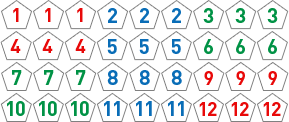 130:1
- Any Double Number Bet
- Any Double Number bet is won when any two numbers of the resulting dice are the same.
-
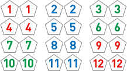 11:4
- Specific Double Number Bet
- Double 1, Double 2, Double 3 ….., Double 10, Double 11 and Double 12 are open for this bet type. Specific Double Number bet is won if any two of the resulted dice is of the Number that is wagered on.
-
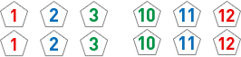 45:1
- Zodiac
- All twelve Zodiacs are open for this bet type and each animal represents a number range. Zodiac bet is won if the total sum of all three resulted dice falls within the range.
-
PayoutsZodiac Total Sum of all three dice Payout Rat: 3 to 8 26:1 Ox: 9, 10 and 11 13:1 Tiger: 12 and 13 11:1 Rabbit: 14 and 15 8:1 Dragon: 16 and 17 7:1 Snake: 18 and 19 6:1 Horse: 20 and 21 6:1 Goat: 22 and 23 7:1 Monkey: 24 and 25 8:1 Rooster: 26 and 27 11:1 Dog: 28, 29 and 30 13:1 Pig: 31 to 36 26:1 No. Bet Type Payout 1. Small 1:1 2. Big 1:1 3. Odd 1:1 4. Even 1:1 5. Specific Single Color Bet 1:1 6. Specific Double Color Bet 3:1 7. Specific Triple Color Bet 23:1 8. Any Triple 7:1 9. Three Stars 3:1 10. Straights 25:1 11. Any Triple Number Bet 130:1 12. Any Double Number Bet 11:4 13. Specific Double Number Bet 45:1 14. Zodiac Rat: 3 to 8 26:1 Ox: 9, 10 and 11 13:1 Tiger: 12 and 13 11:1 Rabbit: 14 and 15 8:1 Dragon: 16 and 17 7:1 Snake: 18 and 19 6:1 Horse: 20 and 21 6:1 Goat: 22 and 23 7:1 Monkey: 24 and 25 8:1 Rooster: 26 and 27 11:1 Dog: 28, 29 and 30 13:1 Pig: 31 to 36 26:1
Terms & Conditions:
- If a dice comes to rest tipped against another one or against the glass, this is “cock dice” and the roll must be repeated. No placed wager can be withdrawn or cancelled.
- Cases when the bounce of the dices is less than 3 times, result will be considered invalid. When any of the dice don't rotate during the bounce, that particular bounce will not be counted. Once an invalid game called, rolling of dice will repeat. No placed wager can be withdrawn or cancelled.
- Any games with wrong result entered into system will be corrected accordingly. Tickets will be re-processed with the rightful result.
- If you are disconnected from the game due to a connection problem, your bets are recorded and paid out according to the results of the round. You can view the results of the round in the game history.
Live Roulette
Live Roulette uses standard European Roulette rules and is played with a live dealer and a real Roulette table.
Straight Up
You can bet on any number, including 0, by placing the chip on the center of a number.
Split Bet
You can bet on two numbers by placing a chip on the line that divides the two numbers.
Street Bet
To bet on a row of three numbers (a street), place a chip on the boundary line of the roulette table, at the end of the corresponding row.
Corner Bet
You can bet on four numbers by placing chips at the corner where the four numbers meet.
Four Bet
You can bet on the numbers 0, 1, 2, and 3 by placing your chip on the boundary line, where the line between 0 and the first row intersects it.
Line Bet
You can bet on two street bets (i.e., the six different numbers in two rows of three numbers), by placing your chip on the boundary line of the roulette table where the line dividing the two rows intersects it.
Column Bet
There are three boxes labeled "2 to 1" at the bottom of each column of numbers. You can place bets for all numbers in a column by placing chip(s) in one of these boxes. If any of the numbers in the selected column is hit you get paid 2:1; 0 is a losing number.
Dozen Bet
You can bet on a group of twelve numbers by placing your chip in one of the three boxes marked "1st 12," "2nd 12," or "3rd 12." If one of your 12 numbers is hit, you are paid 2:1; 0 is a losing number.
Red/Black, Even/Odd, Low/High Bets
You can place a bet in one of the boxes along the long side of the table that covers half of the numbers on the roulette table (excluding 0). Each box covers 18 numbers. You win even money (1 to 1) on all of these bets; 0 is a losing number.
Minimum table bet
There is a minimum table bet, meaning that all your bets added together (your total bet), must equal at least the minimum value indicated on the table (see the Min sign).
Voisins du zero
Is a bet on all numbers of the Voisins arc: 22, 18, 29, 7, 28, 12, 35, 3, 26, 0, 32, 15, 19, 4, 21, 2, 25. These are all the numbers on almost half the Roulette wheel, including the zero. Players need nine chips of any selected value. The chips are placed as follows: one split bet on each of the numbers 4/7, 12/15, 18/21, 19/22, 32/35, two chips on the triplet (street bet) 0-2-3 and two chips on 25-29 (corner bet).
Possible winnings are as follows:
| If winning number is one of these: | Player gets paid: | Player’s true profit: |
| 4, 7, 12, 15, 18, 19, 21, 22, 32, 35 | 17 chips (17:1) + 1 chip | 17 + 1 - 9 = 9 chips |
| 0, 2, 3 | 22 chips (11:1) + 2 chip | 22 + 2 - 9 = 15 chips |
| 25, 26, 28, 29 | 16 chips (8:1) + 2 chips | 16 + 2 - 9 = 9 chips |
Tier
Players can place six chips to cover the numbers 27, 13, 36, 11, 30, 8, 23, 10, 5, 24, 16, 33. This is called the Tier arc on the Roulette board. One chip goes on each of the following splits: 5/8, 10/11, 13/16, 23/24, 27/30, 33/36. The true profit on this bet is: 17 + 1 - 6 = 12 chips. So the payout is 12:6 or 2:1.
Orphelins
Players bet on numbers 17, 34, 6, 1, 20, 14, 31, 9. This is called the Orphelins arc on the Roulette board. Players give five chips to the dealer, which are placed as follows: one straight on the number 1 and one split bet on every one of the numbers 6/9, 14/17, 17/ 20, 31/34. Note that number 17 participates in two splits (14/17 and 17/20) which yields the following possible winning combinations:
| If winning number is one of these: | Player gets paid: | Player’s true profit: |
| 1 | 35 chips (35:1) + 1 chip | 35 + 1 - 5 = 31 chips |
| 6, 9, 14, 20, 31, 34 | 17 chips (17:1) + 1 chips | 17 + 1 - 5 = 13 chips |
| 17 | 34 chips (17:1) + 2 chips | 34 + 2 - 5 = 31 chips |
Neighbors
Bet on number and neighboring numbers on the right and on the left of this number. This bet is played with five chips. For example, "8 and the neighbors" means that the player places a bet on five consecutive numbers 11-30-8-23-10 (8 is in the middle). The true payout is 35 + 1 - 5 = 31 chips.
Jeu zero
Zero game is the name for the numbers closest to zero. All numbers in zero game is included in the big series but is placed differently. The numbers are as following: 12, 35, 3, 26, 0, 32, 15. The bet is placed with 4 chips. One chip goes on each of the following splits : 0/3, 12/15, 32/35 and 1 chip on number 26
Payout
| Chip Covers | Term | Pays |
| 1 number | Straight Up | 35 to 1 |
| 2 numbers | Split Bet | 17 to 1 |
| 3 numbers | Street Bet | 11 to 1 |
| 4 numbers | Corner Bet | 8 to 1 |
| 4 numbers | Four Bet | 8 to 1 |
| 6 numbers | Line Bet | 5 to 1 |
| 12 numbers | Dozen Bet or Column Bet | 2 to 1 |
| 18 numbers | Red/Black, Even/Odd or Low/High Bets | 1 to 1 |
Note: You can place bets that involve two, three, or even four numbers. For example, using the zero, you can place bets on: 1+0, 1+2+0, 2+0, 3+0, or 1+2+3+0.
Terms & Conditions:
- Bad spin is called when roulette ball rotates for less than 5 revolutions on the wheel and re-spin will be called. No placed wager can be withdrawn or cancelled.
- Mishandling of roulette ball which resulted in unintentional dropping onto the wheel will result in re-spin. No placed wager can be withdrawn or cancelled.
- Roulette ball must be rotated in reverse direction from the wheel. Otherwise, re-spin will be called. No placed wager can be withdrawn or cancelled.
- Any games with wrong result entered into system will be corrected accordingly. Tickets will be re-processed with the rightful result.
- If you are disconnected from the game due to a connection problem, your bets are recorded and paid out according to the results of the round. You can view the results of the round in the game history.

Live Super Roulette
Live Super Roulette
Live Super Roulette uses standard European Roulette rules with numbers 1–36 plus a single 0 (zero). During betting time players can bet on any bet types, much like the other normal roulette game.
After the betting timer is closed, there will be one to five Super Numbers (numbers between 0-36) randomly selected and highlighted. And each of the Super Number will have a random payout multiplier (the possible payouts listed below). If the winning number is one of the randomly selected Super Number/s, all Straight Up bets placed will hit the Super Payout.
Super Payouts (Straight Up bets):
499:1
399:1
299:1
99:1
49:1
Non Super Payout (Straight Up bets):
29:1
Straight Up
You can bet on any number, including 0, by placing the chip on the center of a number.
Split Bet
You can bet on two numbers by placing a chip on the line that divides the two numbers.
Street Bet
To bet on a row of three numbers (a street), place a chip on the boundary line of the roulette table, at the end of the corresponding row.
Corner Bet
You can bet on four numbers by placing chips at the corner where the four numbers meet.
Four Bet
You can bet on the numbers 0, 1, 2, and 3 by placing your chip on the boundary line, where the line between 0 and the first row intersects it.
Line Bet
You can bet on two street bets (i.e., the six different numbers in two rows of three numbers), by placing your chip on the boundary line of the roulette table where the line dividing the two rows intersects it.
Column Bet
There are three boxes labeled "2 to 1" at the bottom of each column of numbers. You can place bets for all numbers in a column by placing chip(s) in one of these boxes. If any of the numbers in the selected column is hit you get paid 2:1; 0 is a losing number.
Dozen Bet
You can bet on a group of twelve numbers by placing your chip in one of the three boxes marked "1st 12," "2nd 12," or "3rd 12." If one of your 12 numbers is hit, you are paid 2:1; 0 is a losing number.
Red/Black, Even/Odd, Low/High Bets
You can place a bet in one of the boxes along the long side of the table that covers half of the numbers on the roulette table (excluding 0). Each box covers 18 numbers. You win even money (1 to 1) on all of these bets; 0 is a losing number.
Minimum table bet
There is a minimum table bet, meaning that all your bets added together (your total bet), must equal at least the minimum value indicated on the table (see the Min sign).
Voisins du zero
Is a bet on all numbers of the Voisins arc: 22, 18, 29, 7, 28, 12, 35, 3, 26, 0, 32, 15, 19, 4, 21, 2, 25. These are all the numbers on almost half the Roulette wheel, including the zero. Players need nine chips of any selected value. The chips are placed as follows: one split bet on each of the numbers 4/7, 12/15, 18/21, 19/22, 32/35, two chips on the triplet (street bet) 0-2-3 and two chips on 25-29 (corner bet).
Possible winnings are as follows:
| If winning number is one of these: | Player gets paid: | Player’s true profit: |
| 4, 7, 12, 15, 18, 19, 21, 22, 32, 35 | 17 chips (17:1) + 1 chip | 17 + 1 - 9 = 9 chips |
| 0, 2, 3 | 22 chips (11:1) + 2 chip | 22 + 2 - 9 = 15 chips |
| 25, 26, 28, 29 | 16 chips (8:1) + 2 chips | 16 + 2 - 9 = 9 chips |
Tier
Players can place six chips to cover the numbers 27, 13, 36, 11, 30, 8, 23, 10, 5, 24, 16, 33. This is called the Tier arc on the Roulette board. One chip goes on each of the following splits: 5/8, 10/11, 13/16, 23/24, 27/30, 33/36. The true profit on this bet is: 17 + 1 - 6 = 12 chips. So the payout is 12:6 or 2:1.
Orphelins
Players bet on numbers 17, 34, 6, 1, 20, 14, 31, 9. This is called the Orphelins arc on the Roulette board. Players give five chips to the dealer, which are placed as follows: one straight on the number 1 and one split bet on every one of the numbers 6/9, 14/17, 17/ 20, 31/34.
Neighbors
Bet on number and neighboring numbers on the right and on the left of this number. This bet is played with five chips. For example, "8 and the neighbors" means that the player places a bet on five consecutive numbers 11-30-8-23-10 (8 is in the middle).
Jeu zero
Zero game is the name for the numbers closest to zero. All numbers in zero game is included in the big series but is placed differently. The numbers are as following: 12, 35, 3, 26, 0, 32, 15. The bet is placed with 4 chips. One chip goes on each of the following splits : 0/3, 12/15, 32/35 and 1 chip on number 26
Payout
| Chip Covers | Term | Pays |
| 1 number | Straight Up (Non Super Payout) | 29: 1 |
| 1 number | Straight Up (Super Payout) |
499:1 399:1 299:1 199:1 99:1 49:1 |
| 2 number | Split Bet | 17: 1 |
| 3 number | Street Bet | 11: 1 |
| 4 number | Corner Bet | 8: 1 |
| 4 number | Four Bet | 8: 1 |
| 6 number | Line Bet | 5: 1 |
| 12 number | Dozen Bet or Column Bet | 2: 1 |
| 18 number | Red/Black, Even/Odd or Low/High Bets | 1:1 |
Note: You can place bets that involve two, three, or even four numbers. For example, using the zero, you can place bets on: 1+0, 1+2+0, 2+0, 3+0, or 1+2+3+0.
Terms and Condition:
- Bad spin is called when roulette ball rotates for less than 5 revolutions on the wheel and re-spin will be called. No placed wager can be withdrawn or cancelled.
- Mishandling of roulette ball which resulted in unintentional dropping onto the wheel will result in re-spin. No placed wager can be withdrawn or cancelled.
- Roulette ball must be rotated in reverse direction from the wheel. Otherwise, re-spin will be called. No placed wager can be withdrawn or cancelled.
- Any games with wrong result entered into system will be corrected accordingly. Tickets will be re-processed with the rightful result.
- If you are disconnected from the game due to a connection problem, your bets are recorded and paid out according to the results of the round. You can view the results of the round in the game history.
Live 3 Pictures
General Rules
- The game of Super 3 Pictures is played with a single deck of cards. All picture cards (King, Queen and Jack) and Tens shall carry the value of "0", other cards shall carry their denoted numerical value. (Ace shall carry the value of one).
- In this version of the game, the result is based on Player hand against the Banker hand. Both Player and Banker shall play with 3 cards each. The values of the 3 cards will be added (total score exceeding 10 or 20 will be deducted by 10 and 20 respectively). The objective of the game is to have the highest possible ranking hand. (Refer to ranking list, total of 31 ranks)
- The expressions of "3 Knights", "Double Knights Seven", "Plain Nine" and etc shall have the meanings assigned to each of them as per ranking list. The highest ranking hand is known as "3 Knights," that is a hand with 3 picture cards and follow by "Double Knights Nine", "Single Knights Nine", “Plain Nine”, "Double Knights Eight” and so on.
Game Play
- This is a non commissioned Three Pictures and payout is 1:1 for winning bets on Player Win and Banker Win. Exception for below two conditions, payout is 1:2
-
- Wager on “Player Win” and Player hand won on any combination of 6 (rank list #11, #12 and #13), pays half
- Wager on “Banker Win” and Banker hand won on any combination of 6 (rank list #11, #12 and #13), pays half
- Wager on Player Win and Banker Win will be pushed when result of the draw is TIE.
- Side bet on TIE pays 18:1. A TIE condition is met if the Player’s hand ranks the same as that of the Banker’s, as per the ranking list. This below example illustrates a TIE condition on “Single Knight Nine”:
- Player hand: J Spade, 3 Heart and 6 Diamond
- Banker hand: Q Spade, 10 Heart and 9 Diamond
- Side bet for Player “3 PICTURES” and Banker “3 PICTURES” pays 36:1. A “3 PICTURES” condition is met if all 3 cards are picture cards (King, Queen or Jack) attaining the “3 Knights” rank.
- Player "Pair Plus" and Banker "Pair Plus" have below winning possibilities and payout are,
- Straight Flush is a hand containing three cards of the same suit in consecutive ranking. E.g. 8 ♥ , 7 ♥ , 6 ♥
- Three of a kind is a hand containing three cards of the same rank. E.g. 10♠, 10 ♥ , 10 ♣
- Straight is a hand containing three cards of consecutive rank regardless of suit, an Ace may count high or low. E.g. 8 ♦ , 7 ♣ , 6 ♥
- Flush is a hand containing three cards of the same suit but not in consecutive ranking. E.g. 10 ♥ , 4 ♥ , 2 ♥
- Pair is a hand containing two cards of the same rank. E.g. A ♣ , A ♥ , 8 ♦
Hand Payout Straight Flush 40:1 Three of a Kind 30:1 Straight 5:1 Flush 4:1 Pairs 1:1
RANKING LISTING (Descending order)
| 1. "3 Knights" | (3 picture cards) |
| 2. Double Knights Nine | (2 picture cards + 9) |
| 3. Single Knights Nine | (1 picture card + points of remaining cards = 9) |
| 4. Plain Nine | (sum of three cards equals 9, without picture cards) |
| 5. Double Knights Eight | (2 picture cards + 8) |
| 6. Single Knight Eight | (1 picture card + points of remaining cards = 8) |
| 7. Plain Eight | (sum of three cards equals 8, without picture cards) |
| 8. Double Knights Seven | (2 picture cards + 7) |
| 9. Single Knight Seven | (1 picture card + points of remaining cards + 7) |
| 10. Plain Seven | (sum of three cards equals 7, without picture cards) |
| 11. Double Knights Six | (2 picture cards + 6) |
| 12. Single Knight Six | (1 picture card + points of remaining cards 6) |
| 13. Plain Six | (sum of three cards equals 6, without picture cards) |
| 14. Double Knights Five | (2 picture cards + 5) |
| 15. Single Knight Five | (1 picture card + points of remaining cards = 5) |
| 16. Plain Five | (sum of three cards equals 5, without picture cards) |
| 17. Double Knights Four | (2 picture cards + 4) |
| 18. Single Knight Four | (1 picture card + points of remaining cards = 4) |
| 19. Plain Four | (sum of three cards equals 4, without picture cards) |
| 20. Double Knights Three | (2 picture cards + 3) |
| 21. Single Knight Three | (1 picture card + points of remaining cards = 3) |
| 22. Plain Three | (sum of three cards equals 3, without picture cards) |
| 23. Double Knights Two | (2 picture cards + 2) |
| 24. Single Knight Two | (1 picture card + points of remaining cards = 2) |
| 25. Plain Two | (sum of three cards equals 2, without picture cards) |
| 26. Double Knights One | (2 picture cards + 1) |
| 27. Single Knight One | (1 picture card + points of remaining cards = 1) |
| 28. Plain One | (sum of three cards equals 1, without picture cards) |
| 29. Double Knights Zero | (2 picture cards + 10) |
| 30. Single Knight Zero | (1 picture card + points of remaining cards = 0) |
| 31. Plain Zero | (sum of three cards equals 0, without picture cards) |
Terms & Conditions:
- Exposed card
- Any exposure of in-game cards (less burn cards) during bets offering will result in voiding of hand
- Appropriate action will be taken by management for exposed cards during shuffling, depending on the stage of shuffling and number of exposed cards.
- Dropped cards
- Cards that fall outside of the camera visual during shuffling, burning and scooping will be picked up and reused.
- Cards that fall outside of camera visual during dealing will be reused only if it was exposed before getting out of sight. Otherwise, the particular hand will be voided.
- Wrong dealing sequence or placement of cards
- Reconstruction of actual cards will be carried out if error was discovered before submission
- Result will be edited if dealer dealt in the sequence from Player 3 -> Player 2 -> Player 1 -> Dealer for the entire hand. Settlement will swap the result of Player 1 with Player 3.
- Management reserves the rights to void erroneous hand
- Cards jammed in shuffling machine
- In circumstances when cards are jammed in the shuffling machine during dealing of the game , management reserves the rights to void the hand.
- Accidental clearance of cards from shuffling machine
- In the event if balance cards of the in-game deck is cleared out from shuffling machine (due to machine fault or human error), management reserves the rights to void the hand.
Live Blackjack
Live Super Roulette
Blackjack is played on four Ante betting positions, four Player's Perfect Pair betting positions and one Dealer's Perfect Pair betting position.
The game allows an unlimited number of players to bet on any of the four Ante betting positions within a single game round. Multiple players may place bets on the same seat. If two players are playing on the same position, one may choose to Stand and the other may choose to Hit. In this case, the dealer will deal another card to the position, but the player who chose to Stand will not receive the card.
Game Rules
- The objective of Blackjack is for the total of Players’ cards to be closer to 21 than the Dealer’s cards, without exceeding 21.
- In Blackjack, aces count as either 1 or 11, face cards as 10, and number cards at their face value.
- A combination of an ace and a ten-value for first two cards is considered a Blackjack and wins 1.5 times of Player’s original bet.
- If the total value of Player’s cards is closer to 21 than the Dealer’s, wins Ante bet amount.
- If the total value of cards is more than 21, Ante bets on Players consider “busted” and lose.
- If both Player and Dealer have the same card total (17 to 21), neither side wins and bet is returned as “push”. Blackjack beats a score of 21.
Our Blackjack follows the standard “Las Vegas Strip” rules, with the following exceptions:
- The dealer stands on 17 (including soft 17)
- Split hands cannot be split.
- Only one card is drawn to split aces.
- Double after splitting is allowed.
- The dealer will not check for Blackjack in any case. In the event if both Player and Dealer has Blackjack, will be consider as a “push”.
- Double is allowed only on first two cards combination has total value of 11.
- If you double and the dealer's first card is of value 11 (ACE), and the dealer gets Blackjack, you lose both your bets. If the dealer’s first card is of value 10, and the dealer gets Blackjack, you get the Double bet back.
- It is theoretically possible to have 8 cards dealt to you without going bust. In this case your hand automatically wins, except when the dealer has Blackjack.
Game Play:
- There is a limited time window for initial bets offering. Once an Ante bet has been placed for a betting position, the Player's Perfect Pair side bet can be placed for the same position and bets can be placed on the Dealer's Perfect Pair betting position
- Initial deal will include two cards each for all betting positions with bets on it. And one faced up card for the dealer’s hand.
- After which, the first betting position will start using the Hit, Stand, Double and Insurance buttons as necessary.
- When choosing Double an additional bet amount is taken from your balance and your bet is doubled.
- You must make your move in a certain amount of time. If you do not make a selection, you will automatically stand. In a split situation you will automatically fold.
- If every position at the table busts (provided all online members who bet and decide to HIT which resulted in bust), the round is over. The dealer's second card will be drawn and revealed but no third or additional cards to be drawn.
Split
Based on Optimal Strategy Table, only pair Ace and 8 combinations automatically activate a split situation. In the split situation you only have the option to Split or Fold. If you do not want to spilt and click Fold, Ante bets will be returned in full and you will be out of the game round. If choose to Split, an additional bet amount is taken from the balance and bet is doubled. An extra card will be dealt for each split card first and follow by the option to Hit, Stand or Double for each splitted hand.
Note:
- Split aces only receive one card
- Split aces combination with any value of 10 card will be consider as 21 point instead of Blackjack
- If member doesn’t have enough balance to split, system will default action as Fold
Optimal Strategy
In a split condition, the options to Hit, Stand, Fold or Split are based on the Optimal Strategy Table.
| Player’s first two cards | Available action |
| Ace, Ace | Split, Fold |
| 2,2 | Hit, Stand |
| 3,3 | Hit, Stand |
| 4,4 | Hit, Stand |
| 5,5 | Hit, Stand |
| 6,6 | Hit, Stand |
| 7,7 | Hit, Stand |
| 8,8 | Split, Fold |
| 9,9 | Hit, Stand |
| 10,10 | Hit, Stand |
| J,J | Hit, Stand |
| Q,Q | Hit, Stand |
| K,K | Hit, Stand |
Double
When the total value of the first two cards is 11 points, doubling is allowed. The bet amount becomes twice the original (with the difference taken out of your balance), and you are dealt one more card.
Note:
- One card only is dealt on double
- If member doesn’t have enough balance to double, system will reject double bet
Side bets:
Insurance
If the dealer shows an Ace in his initial hand, you are given a chance to insure your bet against him having Blackjack. If you get Insurance, an amount equal to half your original bet is placed separately on the table. If the dealer does have Blackjack, you are paid 2 to 1 on your insurance. This way you do not lose your original bet (because you get the 2x half your original bet, plus the insurance amount back). If the dealer does not have Blackjack, you lose the insurance amount, even if you end up losing.
Note:
- Insurance is offered in the same decision time frame as the other main bets
- If member doesn’t have enough balance to double, system will reject insurance bet
Perfect Pairs
Perfect Pairs bet that your own first two cards or the dealer's first two cards form a pair. The following is a description of the available side bets:
Player's Perfect Pair / Dealer's Perfect Pair
The side bet rules are the following:
- The Player's Perfect Pair side bet wins if the first two Player cards form a ‘Perfect Pair’, ‘Colored Pair’, or a ‘Mixed Pair’.
- The Dealer's Perfect Pair side bet wins if the first two Dealer cards form a ‘Perfect Pair’, ‘Colored Pair’, or a ‘Mixed Pair’.
- The Perfect Pair side bet wins according to the payout table if the first two Player or Dealer cards form a pair of the same suit, for example a pair of 4 of Diamonds.
- The Colored Pair side bet wins according to the payout table if the first two Player or Dealer cards form a pair of the same color but different suit, for example 4 of Diamonds and 4 of Hearts.
- The Mixed Pair side bet wins according to the payout table if the first two Player or Dealer cards form a pair, but with different colors and suits, for example 4 of Diamonds and 4 of Spades.
- Both Player's Perfect Pair and Dealer's Perfect Pair side bets can be placed at the same time.
- Side bets cannot be placed without placing a regular bet.
Payout:
| Pays | |
| Winning Hand | 1 to 1 |
| Insurance | 2 to 1 |
| Blackjack | 3 to 2 |
| Split Fold | 100% of Ante bet will be returned |
| Mixed Pair | 6 to 1 |
| Colored Pair | 12 to 1 |
| Perfect Pair | 25 to 1 |
Terms & Conditions:
- Exposed card
- Any exposure of in-game cards (less burn cards) during bets offering will result in voiding of hand
- Appropriate action will be taken by management for exposed cards during shuffling, depending on the stage of shuffling and number of exposed cards.
- Drawing of unnecessary cards (Exposed)
- Any unnecessary cards drawn after the game will not affect the result.
- Dropped cards
- Cards that fall outside of the camera visual during shuffling, burning and scooping will be picked up and reused.
- Cards that fall outside of camera visual during dealing will be reused only if it was exposed before getting out of sight. Otherwise, the particular hand will be voided and the shoe will resume.
- Wrong dealing sequence or placement of cards
- Reconstruction of actual cards will be carried out if error was discovered on the spot before any more cards were drawn from the point of mistake.
- Management reserves the rights to void erroneous hand
- Cards jammed in shuffling machine
- In circumstances if any card is jammed in the shuffling machine management reserves the rights to void the hand.
- If Blackjack is already dealt to the any Player’s hand before the jam took place and Banker’s 1st card is not a value 10 or Ace, rightful winnings will be paid out.
- If Player’s hand already met the winning condition for Pairs bet before the jam took place, rightful winnings will be paid out.
- Disconnection
- In cases of disconnection, action will automatically default as stand. In a split situation you will automatically fold.
Live Super Fantan
Traditional Fan Tan is played with white buttons, a cup and a wand. The dealer will cup some buttons, remove the cup and start dividing them in groups of 4. The number of buttons left in the last group will be 1,2,3 or 4 and this will be the game result.
“Super Fan Tan” is an adaptation which instead of white buttons, it uses the 6 cards dealt on a Live Three Pictures table as the basis for result. Each card represents a value (refer table below) and the value of all 6 cards will be added up, divide by 4 to produce the game’s winning number (1,2,3 or 4).
- A: 1
- 2: 2
- 3: 3
- 4: 4
- 5: 5
- 6: 6
- 7: 7
- 8: 8
- 9: 9
- 10: 10
- J: 11
- Q: 12
- K: 13
“Super Hand” Feature
A system randomised 12-faced dice (number 1 to 12) will be rolled shortly after the betting timer is closed for each hand. If the number appeared on the dice is number 9 or 8, this hand will be deemed as a “Super Hand” and all players wagering on Fan Bet shall benefit from the improved odds (refer to payout list for “Super Hand” below).
Bet Options
1. Fan Bet:
A bet of Single number. Pays 2.85:1
| Fan | Win if result is |
| Fan 1 | 1 |
| Fan 2 | 2 |
| Fan 3 | 3 |
| Fan 4 | 4 |
2. Nim Bet:
A bet of two numbers, one indicated as win and the other push. Pays 1.90:1
| Nim | Win if result is | Push if result is |
| 1 Nim 2 | 1 | 2 |
| 1 Nim 3 | 1 | 3 |
| 1 Nim 4 | 1 | 4 |
| 2 Nim 1 | 2 | 1 |
| 2 Nim 3 | 2 | 3 |
| 2 Nim 4 | 2 | 4 |
| 3 Nim 1 | 3 | 1 |
| 3 Nim 2 | 3 | 2 |
| 3 Nim 4 | 3 | 4 |
| 4 Nim 1 | 4 | 1 |
| 4 Nim 2 | 4 | 2 |
| 4 Nim 3 | 4 | 3 |
3. Kwok Bet:
A bet of two numbers, any of which win. Pays 0.95:1
| Kwok Bet | Win if result is |
| 1 & 2 | 1 or 2 |
| 1 & 4 | 1 or 4 |
| 2 & 3 | 2 or 3 |
| 3 & 4 | 3 or 4 |
4. Odd Bet:
Odd bet wins when the result is 1 or 3. Pays 0.95:1
5. Even Bet:
Even bet wins when the result is 2 or 4. Pays 0.95:1
6. Small Bet:
Small bet wins when the total value of the 6 cards add up to 8 - 41. Pays 1:1. Wagers on Small lose all when the total value adds up to 42.
7. Big Bet:
Big bet wins when the total value of the 6 cards add up to 43 - 76. Pays 1:1. Wagers on Big bet lose all when the total value adds up to 42.
8. Total Point 42:
Total Point 42 bet wins when total value of the 6 cards add up to 42. Pays 19:1.
Payouts
| No. | Bet Type | Payout |
| 1. | 1 Nim 1 | 1.90:1 |
| 2. | 1 Nim 2 | 1.90:1 |
| 3. | 1 Nim 3 | 1.90:1 |
| 4. | 1 Nim 4 | 1.90:1 |
| 5. | 2 Nim 1 | 1.90:1 |
| 6. | 2 Nim 3 | 1.90:1 |
| 7. | 2 Nim 4 | 1.90:1 |
| 8. | 3 Nim 1 | 1.90:1 |
| 9. | 3 Nim 2 | 1.90:1 |
| 10. | 3 Nim 4 | 1.90:1 |
| 11. | 4 Nim 1 | 1.90:1 |
| 12. | 4 Nim 2 | 1.90:1 |
| 13. | 4 Nim 3 | 1.90:1 |
| 14. | Kwok 1 & 2 | 0.95:1 |
| 15. | Kwok 1 & 4 | 0.95:1 |
| 16. | Kwok 2 & 3 | 0.95:1 |
| 17. | Kwok 3 & 4 | 0.95:1 |
| 18. | Odd | 0.95:1 |
| 19. | Even | 0.95:1 |
| 20. | Small | 1:1 |
| 21. | Big | 1:1 |
| 22. | Total Point 42 | 19:1 |
“Non Super Hand”
| No. | Bet Type | Payout |
| 1 | Fan 1 | 2.85:1 |
| 2 | Fan 2 | 2.85:1 |
| 3 | Fan 3 | 2.85:1 |
| 4 | Fan 4 | 2.85:1 |
“Super Hand”
| No. | Bet Type | Payout |
| 1 | Fan 1 | 3:1 |
| 2 | Fan 2 | 3:1 |
| 3 | Fan 3 | 3:1 |
| 4 | Fan 4 | 3:1 |
Terms & Conditions:
- Exposed card
- Any exposure of in-game cards during bets offering will result in voiding of hand
- Appropriate action will be taken by management for exposed cards during shuffling, depending on the stage of shuffling and number of exposed cards.
- Dropped cards
- Cards that fall outside of the camera visual during shuffling, burning and scooping will be picked up and reused.
- Cards that fall outside of camera visual during dealing will be reused only if it was exposed before getting out of sight. Otherwise, the particular hand will be voided.
- Wrong dealing sequence or placement of cards
- Reconstruction of actual cards will be carried out if error was discovered before submission
- Result will be edited if dealer dealt in the sequence from Player 3 -> Player 2 -> Player 1 -> Dealer for the entire hand. Settlement will swap the result of Player 1 with Player 3.
- Management reserves the rights to void erroneous hand
- Cards jammed in shuffling machine
- In circumstances when cards are jammed in the shuffling machine during dealing of the game , management reserves the rights to void the hand.
- Accidental clearance of cards from shuffling machine
- In the event if balance cards of the in-game deck is cleared out from shuffling machine (due to machine fault or human error), management reserves the rights to void the hand.
Live Super Hi-Lo
Live Super Hi-Lo
Super Hi-Lo is played with a deck of 52 cards. To begin the game, 5 cards will be dealt faced up and revealed. After that, the first bet timer will start and bets for the result on the 6th card will be opened for placement. Once the timer has stopped, the 6th card will be dealt and the bets will be resulted. This process of placing bet on the result of 1 single card at a time will repeat until the 15th card. Thereafter, a new deck of card will be used.
Bet Options
- Low Bet:
- High Bet:
- Odd Bet:
- Even Bet:
- 7 Bet:
Low bets win when the result of the card is A,2,3,4,5,6. Bets consider lose when the result is 7.
High bets win when the result of the card is 8,9,10,J,Q,K. Bets consider lose when the result is 7.
Odd bets win when the result of the card is A,3,5,9,J,K. Bets consider lose when the result is 7.
Even bets win when the result of the card is 2,4,6,8,10,Q. Bets consider lose when the result is 7.
7 bets win when the result of the card is 7.
Payout
This game does not have a fixed payout and the odds for each bet type will change accordingly depending on the revealed cards.
Payout range below:
| Minimum Payout | Maximum Payout | |
| Low,High,Odd,Even | 0.52 : 1 | 2.64 : 1 |
| 7 | 6.93 : 1 | 38.24 : 1 |
Terms and Conditions:
Card Games
- Exposed card
- In all card games, any exposure of in-game cards during bets offering will result in voiding of hand.
- Appropriate action will be taken by management for exposed cards during shuffling, depending on the stage of shuffling and number of exposed cards.
- Dropped cards
- Cards that fall outside of the camera visual during shuffling, burning and scooping will be picked up and reused.
- Cards that fall outside of camera visual during dealing will be reused only if it was exposed before getting out of sight. Otherwise, the particular hand will be voided and the shoe will resume.
- Excess cards drawn
- In circumstances where excess cards are drawn, these cards will be used as burn card or in-game cards appropriately. Any excess cards that cannot be used for that running hand will be burnt.
- Remaining games of the deck will resume as per normal.
- Wrong dealing sequence or placement of cards
- Reconstruction of actual cards will be carried out if error was discovered before submission
- Management reserves the rights to void erroneous hand
- Cards jammed in shuffling machine
- In circumstances when cards are jammed in the shuffling machine during dealing of the game , management reserves the rights to void the hand.
- Accidental clearance of cards from shuffling machine
- In the event if balance cards of the in-game deck is cleared out from shuffling machine (due to machine fault or human error), management reserves the rights to void the hand.
Live Bull Fight
Live Bull Fight
General Rules
Bull Fight is played with a single deck of cards. The result is based on Red Bull hand against the Blue Bull hand, according to Bull Fight game rules (refer to Ranking List below).
5 cards each will be dealt to Red Bull and Blue Bull. Out of the 5 cards, find 3 cards which can add up to 10 or any multiple of 10 (forms the Left Side). And the remaining 2 cards (forms the Right Side) points will be added. If the right side adds up to over 10, the total has to minus 10.
Game Play
Wager on “Red Bull” and “Blue Bull” will be pushed when both sides result are the same based on the Ranking List (no further comparison of Suits/Value)
Tie bet pays 5:1 and a TIE condition is met if “Red Bull” and “Blue Bull” have the same rank as per the ranking list. These below example illustrates a TIE condition on Bull 9:
- Red Bull hand: [5 ♦] [5 ♣] [J ♥] , [3 ♣] [6 ♥]
- Blue Bull hand: [Ace ♥] [2 ♦] [7♦] , [2 ♣] [7 ♥]
- Red Bull hand: [7♦] [Ace ♦] [2 ♦], [3 ♦] [6 ♦]
- Blue Bull hand: [7♠] [Ace ♠] [2 ♠], [3 ♠] [6 ♠]
“Double Bull Bull” wager wins when both Red Bull and Blue Bull are Bull Bull rank, pays 100:1
Side bets for “Bull 1”, “Bull 2”, ……, “Bull 9”, “Bull Bull”, “Silver Bull/Gold Bull/Bomb/Five Calf” are available with below payout. Respectively wager wins when either Red Bull or Blue Bull has the specific rank wagered on.
In below example, bets on “Bull 8” and “Bull 9” will pay 5:1
- Red Bull hand: [5 ♦] [5 ♣] [J ♥] , [4 ♣] [4 ♥]
- Blue Bull hand: [Ace ♥] [2 ♦] [7♦] , [2 ♣] [7 ♥]
In below example, bets on “Bull 9” will still pay 5:1
- Red Bull hand: [5 ♦] [5 ♣] [J ♥] , [3 ♣] [6 ♥]
- Blue Bull hand: [Ace ♥] [2 ♦] [7♦] , [2 ♣] [7 ♥]
In below example, bets on “Silver Bull/Gold Bull/Bomb/Five Calf” will pay 120:1
- Red Bull hand: [Q ♦] [K ♣] [J ♥] , [Q ♣] [K ♥]
- Blue Bull hand: [Ace ♥] [3 ♦] [2♦] , [2 ♣] [Ace ♥]
| Rank | Payout |
| Red Bull | 0.95:1 |
| Blue Bull | 0.95:1 |
| Tie | 5:1 |
| Bull 1 | 5:1 |
| Bull 2 | 5:1 |
| Bull 3 | 5:1 |
| Bull 4 | 5:1 |
| Bull 5 | 5:1 |
| Bull 6 | 5:1 |
| Bull 7 | 5:1 |
| Bull 8 | 5:1 |
| Bull 9 | 5:1 |
| Bull Bull | 5:1 |
| Double Bull Bull | 100:1 |
| Silver Bull/Gold Bull/Bomb/Five Calf | 120:1 |
RANKING LISTING (Descending order)
| Rank Order | Rank Name | [Left Side 3 cards] [Right Side 2 cards] | Description |
| 1 | Five Calf | 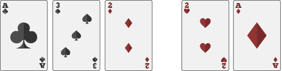 | 5 cards consist of A, 2, 3, 4 and the sum points of five cards are equal to or smaller than 10 points. |
| 2 | Bomb | 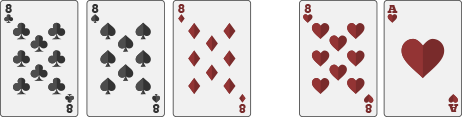 | 4 cards are the same points |
| 3 | Gold Bull | 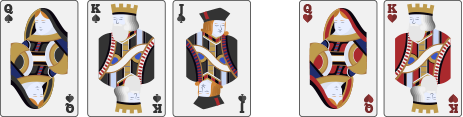 | Each card are bigger than 10 points, not including card 10. |
| 4 | Silver Bull | 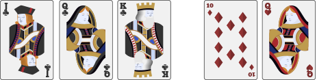 | Each card are bigger than 10 points, at least include a card 10. |
| 5 | Bull Bull | 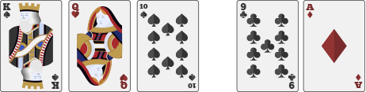 | 3 cards add up to a multiple of 10. The rest of 2 cards add up to 10 or 20. |
| 6 | Bull 9 | 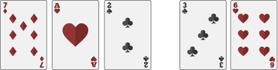 | 3 cards add up to a multiple of 10. The rest of 2 cards add up to 9 or 19. |
| 7 | Bull 8 | 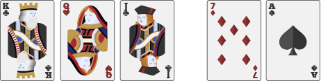 | 3 cards add up to a multiple of 10. The rest of 2 cards add up to 8 or 18. |
| 8 | Bull 7 | 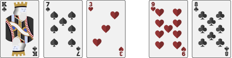 | 3 cards add up to a multiple of 10. The rest of 2 cards add up to 7 or 17. |
| 9 | Bull 6 | 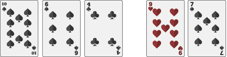 | 3 cards add up to a multiple of 10. The rest of 2 cards add up to 6 or 16. |
| 10 | Bull 5 | 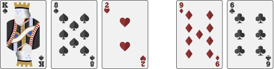 | 3 cards add up to a multiple of 10. The rest of 2 cards add up to 5 or 15. |
| 11 | Bull 4 | 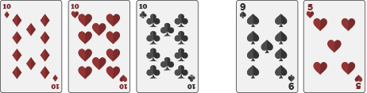 | 3 cards add up to a multiple of 10. The rest of 2 cards add up to 4 or 14. |
| 12 | Bull 3 | 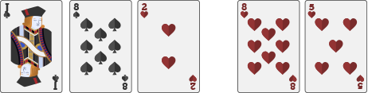 | 3 cards add up to a multiple of 10. The rest of 2 cards add up to 3 or 13. |
| 13 | Bull 2 | 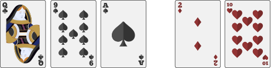 | 3 cards add up to a multiple of 10. The rest of 2 cards add up to 2 or 12. |
| 14 | Bull 1 | 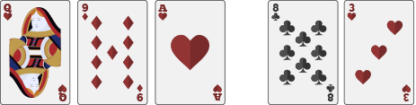 | 3 cards add up to a multiple of 10. The rest of 2 cards add up to 1 or 11. |
| 15 | No Bull | 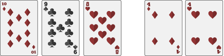 | 3 cards cannot add up to a multiple of 10. |
Terms & Conditions:
- Exposed card
- Any exposure of in-game cards (less burn cards) during bets offering will result in voiding of hand
- Appropriate action will be taken by management for exposed cards during shuffling, depending on the stage of shuffling and number of exposed cards.
- Dropped cards
- Cards that fall outside of the camera visual during shuffling, burning and scooping will be picked up and reused.
- Cards that fall outside of camera visual during dealing will be reused only if it was exposed before getting out of sight. Otherwise, the particular hand will be voided.
- Wrong dealing sequence or placement of cards
- Reconstruction of actual cards will be carried out if error was discovered before submission
- Result will be edited if dealer dealt in the sequence from Player 3 -> Player 2 -> Player 1 -> Dealer for the entire hand. Settlement will swap the result of Player 1 with Player 3.
- Management reserves the rights to void erroneous hand
- Cards jammed in shuffling machine
- In circumstances when cards are jammed in the shuffling machine during dealing of the game , management reserves the rights to void the hand.
- Accidental clearance of cards from shuffling machine
- In the event if balance cards of the in-game deck is cleared out from shuffling machine (due to machine fault or human error), management reserves the rights to void the hand.
Live Fish Prawn Crab
Live Fish Prawn Crab
“Fish Prawn Crab” is a traditional Asian game played on 3 dices and each dice with 6 faces painted with below symbols. Each symbol also represented by its respective Number and Color.
Fish (1, Red)
Prawn (2, Green)
Hu Lu (3, Blue)
Tiger (4, Blue)
Crab(5, Green)
Rooster (6, Red)
Bet Options
- Single Symbol:
Win when the symbol selected appears in at least one of the three resulted dice.
One Dice. Pays 1:1
Two Dice: Pays 2:1
Three Dice: Pays 3:1 - Specific Double Symbols:
Win when the selected symbol double appear at least twice in the three resulted dice, Pays 8:1 - Pair Match Symbols
Win when both the two symbols selected appear in the three resulted dice., Pays 5:1 - Any Triple Symbols:
Win when all three dice is of the same symbol, Pays 24:1 - Specific Triple Symbols:
Win when the selected symbol triple appear on all three resulted dice, Pays 150:1 - Small:
Small bets win when the number total of the three dice is between 4 and 10. Bets consider lose when the result is Any Triple - Big:
Big bets win when the number total of the three dice is between 11 and 17. Bets consider lose when the result is Any Triple
Bet Options
| No. | Bet Type | Payout |
| 1. | Single Symbol | |
| One Dices | 1:1 | |
| Two Dices | 1:2 | |
| Three Dices | 3:1 | |
| 2. | Specific Double Symbol | 8:1 |
| 3. | Pair Match Symbol | 5:1 |
| 4. | Any Triple Symbol | 24:1 |
| 5. | Specific Triple Symbo | 150:1 |
| 6. | Small | 1:1 (Lose on any triples) |
| 7. | Big | 1:1 (Lose on any triples) |
Terms and Condition:
- If a dice comes to rest tipped against another one or against the glass, this is “cock dice” and the roll must be repeated. No placed wager can be withdrawn or cancelled.
- Cases when the bounce of the dices is less than once, result will be considered invalid. Rolling of dice will repeat. No placed wager can be withdrawn or cancelled.
- Any games with wrong result entered into system will be corrected accordingly. Tickets will be re-processed with the rightful result.
- If you are disconnected from the game due to a connection problem, your bets are recorded and paid out according to the results of the round. You can view the results of the round in the game history.
Live Xoc Dia
Introduction
“Xoc Dia” (Dish Shaking) is a popular traditional Vietnam game played on 4 coins and each coin with two faces colored Red & White respectively.
- Small:
Small bets win when: ‘All White’ or ‘1 Red 3 White’ Bets consider lose when ‘2 Red 2 White’ - Big:
Big bets win when: ‘All Red’ or ‘3 Red 1 White’ Bets consider lose when ‘2 Red 2 White’ - Odd:
Odd bets win when: ‘3 Red 1 White’ or ‘1 Red 3 White’ - Even:
Even bets win when: ‘All Red’ or ‘All White’ or ‘2 White 2 Red’ - All White:
Wins when: ‘All White’, Pays - All Red:
Wins when: ‘All Red’ , Pays - 3 Red + 1 White: Wins when:
‘3 Red 1 White’ - 3 White + 1 Red: Wins when:
‘1 Red 3 White’
Payouts
| No. | Bet Type | Payout |
| 1. | Small | 2:1 |
| 2. | Big | 2:1 |
| 3. | Odd | 0.95:1 |
| 4. | Even | 0.95:1 |
| 5. | All White | 14:1 |
| 6. | All Red | 14:1 |
| 7. | 3 Red + 1 Red | 2.8:1 |
| 8. | 3 Red + 1 Red | 2.8:1 |
- If a dice comes to rest tipped against another one or against the glass, this is “cock dice” and the roll must be repeated. No placed wager can be withdrawn or cancelled.
- Cases when the bounce of the dices is less than once, result will be considered invalid. Rolling of dice will repeat. No placed wager can be withdrawn or cancelled.
- Any games with wrong result entered into system will be corrected accordingly. Tickets will be re-processed with the rightful result.
- If you are disconnected from the game due to a connection problem, your bets are recorded and paid out according to the results of the round. You can view the results of the round in the game history.
Live Three Card Poker
Live Three Card Poker
General Rules
- The game of Three Card Poker is played with a single deck of cards.
- In this version of the game, there is only one betting position for players to wager on. However each individual player can make their independent choice to FOLD or PLAY.
- The objective of the game is for the Player to obtain a better poker hand which is of a higher rank than that of the Dealer's in accordance to the ranking list explained below.
Game Play
- A player wishing to participate in a round of play could place an “Ante” and/or “Pair Plus”/”6 Card Bonus” wager during the placing bet timer. A player may also wish to place a “Pair Plus”/”6 Card Bonus” bet without any “Ante” bet, which in this case will not be prompted for Play/Fold action.
- Player and Dealer will be dealt with three cards each facing down.
- Once the betting timer closes, the Player cards will be scanned and revealed. Players may now decide to:
- ✓ “Fold” which would result in the player losing his “Ante” wager. However a player may elect to “Fold” the “Ante” wager and still be eligible for any payout on “Pair Plus”/”6 Card Bonus” wagers.
- ✓ Wager on “Play”, which requires the player to place a wager equivalent to the value of the “Ante”. (if not enough balance for “Play” wager, action will be defaulted to “Fold.)
- ✓ No action required if the player has only placed “Pair Plus”/”6 Card Bonus” wager without “Ante”.
- At the end of the decision timer, the Dealer will reveal his three cards. The cards for both Player and Dealer will be compared and the winning hand shall be the one with the higher rank poker hand.
- Dealer's hand “qualifies” if it's a Royal Flush, Straight Flush, Three of a Kind, Straight, Flush or Pair. It also “qualifies” if it contains at least one Queen or one card of higher rank than Queen. When “qualifies”, the Dealer shall compare his hand against the Player's:
- ✓ Pay the “Ante” and “Play” wagers if the Player's hand is ranked higher than the Dealer's based on the ranking list below.
- ✓ Players lose their “Ante” and “Play” wagers if the Player's hand is ranked lower than the Dealer's based on the ranking list below.
- ✓ Declare a “Stand off” if both the Player's and Dealer's hand are ranked the same. “Ante” and “Play” wagers will be returned and a wager neither wins nor loses.
- ✓ All “Ante Bonus” wagers shall be paid in accordance with the Pay Table below (irrespective of the Dealer's hand). ”Ante Bonus” payment is made to the “Ante” wager for hands that have a value of Straight or better.
- ✓ All “Pair Plus”/”6 Card Bonus” wagers shall be paid in accordance with the Pay Table below (irrespective of the Dealer's hand)
- If Dealer's hand “does not qualify”, the Dealer shall NOT compare his hand against the Player's and:
- ✓ There shall be no payment on the “Play” wagers and “Play” wager amount will be returned.
- ✓ All “Ante” wagers shall be paid in accordance with the Pay Table below. (irrespective of the Dealer's hand)
- ✓
All “Ante Bonus” wagers shall be paid in accordance with the Pay Table below (irrespective of the Dealer's hand). ”Ante Bonus” payment is made to the “Ante” wager for hands that have a value
of Straight or better.
- ✓ All “Pair Plus”/”6 Card Bonus” wagers shall be paid in accordance with the Pay Table below (irrespective of the Dealer's hand)
Pair Plus
An optional bet, you win according to the Pay Table “Pair Plus” with a “Pair” or better on your three cards, even if you fold and the dealer wins the round.
6 Card Bonus
An optional bet, you win according to the Pay Table “6 Card Bonus” with a “Three of a Kind” or better on the best five-card hand that can be made of the six available cards, even if you fold and the dealer wins the round.
Ante Bonus
Ante bonus payment is made to the “Ante” wager for hands that have a value of Straight or better (irrespective of the Dealer's hand). This bonus payment is eligible for “Ante” wager made and the player did not Fold on it.
E.g $10 wagered on “Ante” and $10 wagered on "Play". With the game resulted in Player poker hand “Three of a Kind” & Dealer poker hand “Straight Flush”, Player will receive $10 * 4 = $40 for “Ante Bonus” and $0 return for “Ante” & "Play".
Poker Hands for “Three Card Poker” and “Pair Plus”
The order of Poker Hands from the highest to the lowest is as follows:
- Royal Flush is a hand containing three cards of only Ace, King, Queen of the same suit. E.g. A♠, K♠, Q♠
- Straight Flush is a hand containing three cards of the same suit in consecutive ranking other than Royal Flush. E.g. 8♥, 7♥, 6♥
- Three of a kind is a hand containing three cards of the same rank. E.g. 10♠, 10♥, 10♣
- Straight is a hand containing three cards of consecutive rank regardless of suit, an Ace may count high or low. E.g. 8♦, 7♣, 6♥
- Flush is a hand containing three cards of the same suit but not in consecutive ranking. E.g. 10♥, 4♥, 2♥
- Pair is a hand containing two cards of the same rank. E.g. A♣, A♥, 8♦
- High Card is a hand which does not form any of the combinations listed above and contains three cards of different rank that are at least 2 suits and that are not consecutive. E.g. Q♣, 10♥, 6♦.
Hands that are of the same Poker Hand but consisting of different card values shall be ranked in accordance to ranking of the cards. The ranking of the cards, from highest to lowest shall be as below:
- Ace, King, Queen, Jack, 10, 9, 8, 7, 6, 5, 4, 3, 2
*except in cases of Straight Flush or a Straight consisting of 3, 2 and Ace, where the Ace is counted as 1 (E.g. 3♣, 2♣, Ace♣ its consider lower rank than 4♦, 3♦, 2♦)
- Suits have no value and have no bearing in the ranking.
- When comparing two hands of Straight Flush or two hands of Straight, the one with the highest card wins (E.g. 10♦, 9♦, 8♦ is higher rank than 9♣, 8♣, 7♣). If both Dealer and Player have all 3 cards of the same ranking (E.g. 10♣, 9♦, 8♣ is same rank with 10♦, 9♣, 8♦), the hand shall be a stand-off.
- When comparing two hands of Flush, the one with the highest card wins. If the highest cards are equal the second cards are compared; if they are equal to the third cards are compared (E.g. A♣, J♣, 2♣ is higher rank than A♥, 10♥, 9♥). If both Dealer and Player have all 3 cards of the same ranking (E.g. A♣, J♣, 2♣ is same rank with A♦, J♦, 2♦), the hand shall be a stand-off.
- When comparing two hands of Pair, the hand holding the pair of the highest ranking shall win. (E.g. A♣, A♥, 8♦ is higher rank than Q♠, Q♦, 2♦). If the highest ranking pair held by both hands are equally ranked, the winning hand shall be determined by the highest single unpaired card. (E.g. A♣, A♥, 8♦ is higher rank than A♠, A♦, 2♦). If both hands hold one equally ranked pair and a third card of the same ranking, the hand shall be a stand-off. (E.g. A♣, A♥, 8♦ is equal rank as A♠, A♦, 8♣).
-
When comparing two hands of High Card, the one with the highest card wins. If the highest cards are equal the second cards are compared; if they are equal to the third cards are compared (E.g. A♣, J♥,
2♦ beats A♥, 10♠, 9♠)
Poker Hands for “6 Card Bonus”
The order of hands from the highest to the lowest is as follows:
- Royal Flush Is a hand containing an Ace, King, Queen, Jack and 10 of the same suit. E.g. A♦, K♦, Q♦, J♦, 10♦
- Straight Flush Is a hand containing five cards of the same suit in consecutive ranking other than a Royal Flush. E.g. J♣, 10♣, 9♣, 8♣, 7♣
- Four of a kind Is a hand containing four cards of the same rank. E.g. A♣, A♥, A♦, A♠, J♥
- Full House Is a hand containing three cards of the same rank and one “pair". E.g. K♣, K♥, K♦, A♠, A♥
- Flush Is a hand containing five cards of the same suit but not in consecutive ranking. E.g. J♥, 8♥, 6♥, 5♥, 2♥
- Straight Is a hand containing five cards of consecutive rank regardless of suit, an Ace may count high or low. E.g. 9♣, 8♦, 7♣, 6♥, 5♠
- Three of a kind Is a hand containing three cards of the same rank. E.g. 10♠, 10♥, 10♣, 6♥, 3♦
Pay Table
“Ante” and “Play”
|
Hand |
Payout |
|
Ante win |
1:1 |
|
Play win |
1:1 |
“Ante Bonus”
|
Hand |
Payout |
|
Royal Flush/Straight Flush |
5:1 |
|
Three of a Kind |
4:1 |
|
Straight |
1:1 |
“Pair Plus”
|
Hand |
Payout |
|
Royal Flush/Straight Flush |
40:1 |
|
Three of a Kind |
30:1 |
|
Straight |
5:1 |
|
Flush |
4:1 |
|
Pair |
1:1 |
“6 Card Bonus”
|
Hand |
Payout |
|
Royal Flush |
1000:1 |
|
Straight Flush |
200:1 |
|
Four of a Kind |
100:1 |
|
Full House |
20:1 |
|
Flush |
15:1 |
|
Straight |
10:1 |
|
Three of a Kind |
7:1 |
Terms and Condition
- Exposed card
- Any exposure of in-game cards during bets offering will result in voiding of hand
- Appropriate action will be taken by management for exposed cards during shuffling, depending on the stage of shuffling and number of exposed cards. - Dropped cards
- Cards that fall outside of the camera visual during shuffling, burning and scooping will be picked up and reused.
- Cards that fall outside of camera visual during dealing will be reused only if it was exposed before getting out of sight. Otherwise, the particular hand will be voided. - Wrong dealing sequence or placement of cards
- Reconstruction of actual cards will be carried out if error was discovered before submission
- Management reserves the rights to void erroneous hand
- Cards jammed in shuffling machine
- In circumstances when cards are jammed in the shuffling machine during dealing of the game , management reserves the rights to void the hand.
- Accidental clearance of cards from shuffling machine
- In the event if balance cards of the in-game deck is cleared out from shuffling machine (due to machine fault or human error), management reserves the rights to void the hand.
- Disconnection
- In cases of disconnection, pending action for “Ante” bets will automatically default as fold. However, any win payment for “Pair Plus”, “6 card Bonus” and “Ante Bonus” will be made as normal.
Live Thai Hi-Lo
Live Thai Hi-Lo
Introduction
Live Thai Hi-Lo is a Thai version of Sic Bo game, played on three dice and each dice with six faces carrying a unique value of 1 to 6 respectively.
The objective of the game is to predict the outcome of the three dice after they are shaked.
After the betting timer is closed, random payouts will be generated and assigned to the betting positions (refer to payout table below for the payout range). Betting positions with super payout will be displayed on the game client and all winning bets on it will be paid based on the super payout.
Bet Options
| Bet Options | |
| Hi |
“Hi” bets win when the point total of the three dice is 12-17. Bets consider lose when the result is Any Triple. |
| Lo |
“Lo” bets win when the point total of the three dice is 4-10. Bets consider lose when the result is Any Triple. |
| 11 |
“11” bets win when the point total of the three dice is 11. |
| Single Number |
Bet on any specific single number 1 to 6. “Single Number” bets win according to how many times the wagered specific single number appears on the three resulting dice. |
| Pair Numbers |
Bet on any pairs (1,2) (1,3) (4,1) (5,1) (6,1) (2,3) (4,2) (5,2) (6,2) (3,4) (5,3) (6,3) (4,5) (4,6) (5,6). “Pair Numbers” bets win when both numbers appear on any of the three resulting dice. |
| Specific Point & Hi |
Bet on 3 Hi, 4 Hi, 5 Hi or 6 Hi. To win a “Specific Point & Hi” bet, both conditions must be met. Bets consider lose when the result is Any Triple. for example: Bet on 4 Hi One of the dice must be 4 and the sum of three dice is Hi (12-17). Result 4,5,6 (15) - Win Result 1,2,4 (7) - Lose Result 4,4,4 (12) - Lose |
| Specific Point & Lo |
Bet on 1 Lo, 2 Lo, 3 Lo, 4 Lo, 5 Lo or 6 Lo. To win a “Specific Point & Lo” bet, both conditions must be met. Bets consider lose when the result is Any Triple. for example: Bet on 3 Lo One of the dice must be 3 and the sum of three dice is Lo (4-10) Result 1,3,4 (8) - Win Result 3,4,6 (13) - Lose Result 3,3,3 (9) - Lose |
| 3 Numbers |
Bet on (1,2,3) or (4,5,6). To win a “3 Numbers” bet, at least two of the three selected numbers appear in the winning result. for example: Bet on (1,2,3) Result 1,2,4 - Win (Hit 2 numbers) Result 1,2,3 - Win (Hit 3 numbers) Result 1,4,5 - Lose for example: Bet on (4,5,6) Result 1,4,5 - Win (Hit 2 numbers) Result 4,5,6 - Win (Hit 3 numbers) Result 1,2,4 - Lose |
Payouts
| No. | Bet Type | Payout (Normal) |
| 1. | Hi Bet | 1.7:1 |
| 2. | Lo Bet | 1:1 |
| 3. | 11 Hi-Lo Bet | 6.8:1 |
| 4. | Single Number | |
| Number appear 1 times | 1:1 | |
| Number appear 2 times | 2-19:1 | |
| Number appear 3 times | 3-87:1 | |
| 5. | Pair Numbers | 5-24:1 |
| 6. | Specific Point & Hi | |
| 3 Hi | 4-99:1 | |
| 4 Hi | 3-99:1 | |
| 5 Hi | 2-99:1 | |
| 6 Hi | 2-17:1 | |
| 7. | Specific Point & Lo | |
| 1 Lo | 1-19:1 | |
| 2 Lo | 2-17:1 | |
| 3 Lo | 2-49:1 | |
| 4 Lo | 3-49:1 | |
| 5 Lo | 4-149:1 | |
| 6 Lo | 5-399:1 | |
| 7. | 3 Numbers | |
| Hit 2 numbers | 1-24:1 | |
| Hit 3 numbers | 4-74:1 | |
Terms and Condition:
- If a dice comes to rest tipped against another one or against the glass, this is “cock dice” and the roll must be repeated. No placed wager can be withdrawn or cancelled.
- Cases when the bounce of the dices is less than once, result will be considered invalid. Rolling of dice will repeat. No placed wager can be withdrawn or cancelled.
- Any games with wrong result entered into system will be corrected accordingly. Tickets will be re-processed with the rightful result.
- If you are disconnected from the game due to a connection problem, your bets are recorded and paid out according to the results of the round. You can view the results of the round in the game history.
Live Tiger Baccarat
Live Tiger Baccarat
Player and Banker acquire 2 cards each, and neighboring to 9 wins. If the initial 2 cards treated entirety 8 or 9, that is acknowledged as a "Natural". If any of the Player or Banker has “Natural” hand with Player and Banker on 2 cards each, the hand is resulted immediately without any supplementary cards.
Supplementary cards will be dealt and these rules are called the “DRAWING RULES”.
The decision to draw a third card for the PLAYER’S hand is made automatically according to standard Casino rules as provided below in Table 1.
Table 1 - PLAYER’S HAND
| Total Points of First Two Cards | Draw or Stand |
| 0,1,2,3,4 and 5 | Draw a third card unless the BANKER has a NATURAL |
| 6 or 7 | Stand |
| 8 or 9 | NATURAL |
If the Player stands, then the Banker hits on a total of 5 or less.
If the third card is drawn for the Player’s hand, the decision to draw a third card for the Banker’s hand is made automatically according to standard Casino rules as shown in Table 2 below.
Table 2 – BANKER’S HAND
| Total Points of First Two Cards | Draw when the Player’s Third Card is | Stand when the Player’s Third Card is |
| 0,1,2 | 0,1,2,3,4,5,6,7,8,9 | |
| 3 | 0,1,2,3,4,5,6,7,9 | 8 |
| 4 | 2,3,4,5,6,7 | 0,1,8,9 |
| 5 | 4,5,6,7 | 0,1,2,3,8,9 |
| 6 | 6,7 | 0,1,2,3,4,5,8,9 |
| 7 | Stand | |
| 8,9 | NATURAL |
| Payout | |||
| ‘Banker’ wins on point total 6 | 0.5:1 | ||
| ‘Banker’ wins on any other points | 1:1 | ||
| ‘Player’ | 1:1 | ||
| ‘Tie’ | 8:1 | ||
| 'Tiger Tie' | 35:1 | ||
| ‘Tiger Pair’, either Player or Banker has Pair | 4:1 | ||
| 'Tiger Pair’, both Player and Banker has Pair | 20:1 | ||
| 'Tiger Pair’, both Player and Banker has Pair, and are of the same value | 100:1 | ||
| ‘Tiger’, Banker wins on 6 with two cards | 12:1 | ||
| ‘Tiger’, Banker wins on 6 with three cards | 18:1 | ||
| 'Big Tiger' | 50:1 | ||
| ‘Small Tiger’ | 22:1 | ||
Player/Banker
Wagers on ‘Player’ and ‘Banker’ will be pushed and returned when both the ‘Player’ hand and ‘Banker’ hand have the same point total at the end of a round of play.
Tie
Wagers on ‘Tie’ wins when both the ‘Player’ hand and ‘Banker’ hand have the same point total at the end of a round of play.
Tiger Tie
Wagers on ‘Tiger Tie’ wins when both the ‘Player’ hand and ‘Banker’ hand have the same point total of 6 at the end of a round of play.
Tiger Pair
Wagers on ‘Tiger Pair’ may be placed on the possibility that the first 2 cards dealt to the 'Player' or 'Banker' hands are a pair,
- Either Player or Banker has Pair, 4:1
- Both Player and Banker have Pairs, 20:1
- Both Player and Banker have Pairs and both Pairs are of the same value, 100:1 (e.g Player 9♣ 9♥, Banker 9♣ 9♥)
Tiger
A side bet that may be placed on the possibility that “Banker” wins on a total point of 6 and loses with any other outcome.
- ‘Tiger’ with two cards totalling of 6 pays 12:1
- ‘Tiger’ with three cards totalling of 6 pays 18:1
Big Tiger
Wagers on ‘Tiger Tie’ wins when both the ‘Player’ hand and ‘Banker’ hand have the same point total of 6 at the end of a round of play.
‘Big Tiger’ bets are offered on the first 50 hands of every shoe. (restriction not applicable on Virtual tables)
Small Tiger
‘Small Tiger’ means a wager which shall win if the ‘Banker’ wins with a point total of 6 with two cards and loses with any other outcome.
‘Small Tiger’ bets are offered on the first 50 hands of every shoe. (restriction not applicable on Virtual tables)
Terms and Condition
Card Games- Commencement
- Cards must be skipped on every new shoe. First card of the new shoe will be opened, and the number of cards to be skipped will be based on the number of that first card (J, Q and K will be considered as 10).
- Any failure in commencement will be corrected on the spot if the cards for first hand are not dealt. Otherwise, it will result in invalid shoe and a new one will be replaced.
- Depending on the situation, management reserves the rights to void any resulted games in the shoe. - Blue card
- Last hand for card games is indicated by blue card (Dealer’s cut).
- If blue card is drawn in between dealing, the running game will be the last hand.
- If game ends and blue card is the burn card for next game, the latter game will not commence.
- If additional hands are dealt after the last hand, it will be considered as invalid and voided. - Exposed card
- In all card games, any exposure of in-game cards during bets offering will result in voiding of hand.
- In the event unnecessary cards are drawn and exposed during dealing, result of the erroneous hand will stand based on card rules and management reserves the rights to void the shoe.
- Appropriate action will be taken by management for exposed cards during shuffling, depending on the stage of shuffling and number of exposed cards.
- Exposed cards during commencement does not affect the game play. - Wrong card rules
- Any wrongful dealing of cards will be corrected as long as the cards remain on the table. Otherwise in the spirit of fair play, management reserves the rights to void or edit result of the erroneous hand.
- Depending on the situation, management reserves the rights to continue or void the shoe. - Dropped cards
- Cards that fall outside of the camera visual during shuffling, commencement, burning and scooping will be picked up and reused.
- Cards that fall outside of camera visual during dealing will be reused only if it was exposed before getting out of sight. Otherwise, the particular hand will be voided and the shoe will resume.
Live Baccarat Insurance
Live Baccarat Insurance
Player and Banker acquire 2 cards each, and neighboring to 9 wins. If the initial 2 cards treated entirety 8 or 9, that is acknowledged as a "Natural". If any of the Player or Banker has “Natural” hand with Player and Banker on 2 cards each, the hand is resulted immediately without any supplementary cards
Supplementary cards will be dealt and these rules are called the “DRAWING RULES”.
The decision to draw a third card for the PLAYER’S hand is made automatically according to standard Casino rules as provided below in Table 1
Table 1 - PLAYER’S HAND
| Total Points of First Two Cards | Draw or Stand |
| 0,1,2,3,4 and 5 | Draw a third card unless the BANKER has a NATURAL |
| 6 or 7 | Stand |
| 8 or 9 | NATURAL |
If the Player stands, then the Banker hits on a total of 5 or less.
If the third card is drawn for the Player’s hand, the decision to draw a third card for the Banker’s hand is made automatically according to standard Casino rules as shown in Table 2 below.
Table 2 – BANKER’S HAND
| Total Points of First Two Cards | Draw when the Player’s Third Card is | Stand when the Player’s Third Card is |
| 0,1,2 | 0,1,2,3,4,5,6,7,8,9 | |
| 3 | 0,1,2,3,4,5,6,7,9 | 8 |
| 4 | 2,3,4,5,6,7 | 0,1,8,9 |
| 5 | 4,5,6,7 | 0,1,2,3,8,9 |
| 6 | 6,7 | 0,1,2,3,4,5,8,9 |
| 7 | Stand | |
| 8,9 | NATURAL |
| Payout | |||
| Commission Baccarat | |||
| ‘Banker’ | 0.95:1 | ||
| No Commission Baccarat | |||
| ‘Banker’ wins on point total 6 | 0.5:1 | ||
| ‘Banker’ wins on any other points | 1:1 | ||
| ‘Player’ | 1:1 | ||
| ‘Tie’ | 8:1 | ||
| ‘Banker Pair’ | 11:1 | ||
| ‘Player Pair’ | 11:1 | ||
| ‘Big’ | 0.5:1 | ||
| ‘Small’ | 1.5:1 | ||
| ‘Player Natural 8’ | 8:1 | ||
| ‘Player Natural 9’ | 8:1 | ||
| ‘Banker Natural 8’ | 8:1 | ||
| ‘Banker Natural 9’ | 8:1 | ||
| ‘Super 6+ with two cards totalling of 6’ | 12:1 | ||
| ‘Super 6+ with three cards totalling of 6’ | 18:1 | ||
Player/Banker
Wagers on ‘Player’ and ‘Banker’ will be pushed and returned when both the ‘Player’ hand and ‘Banker’ hand have the same point total at the end of a round of play.
Insurance
The spirit of ‘Player Insurance’ and ‘Banker Insurance” bets is to buy against the original ‘Player’ and ‘Banker’ bets, so that to allow risk adjustment in the middle of a game.
‘Player Insurance’ bets are offered when ‘Player’ bet has been made. ‘Banker Insurance’ bets are offered when ‘Banker’ bet has been made. (In the event if both ‘Player’ and ‘Banker’ bets are made, no insurance will be offered).
‘Insurance’ bets are offered at fixed odds and under certain Player/Banker points combination based on below Pay Table. It is offered at 2 phases of the game
- after 4 cards dealt (Player or Banker or Both require 3rd card)
- after Player 3rd card dealt and Banker requires 3rd card
The total payout of the Insurance Bet(s) shall not exceed the original bet placed on ‘Player’ or the ‘Banker’.
| Total Points of First Two Cards | |||||
| After 4 cards dealt | Player Insurance Bets | ||||
| Player Points | Banker Points | Odds (When Player lose) | |||
| 5 | 4 | 1.5:1 | |||
| 6 | 0-5 | 2.5:1 | |||
| 7 | 0-5 | 4:1 | |||
| After Player’s 3rd card dealt | Player Insurance Bets | ||||
| Player Points | Banker Points | Odds (When Player lose) | |||
| 5 | 0-4 | 1.5:1 | |||
| 6 | 0-5 | 2.5:1 | |||
| 7 | 0-6 | 4:1 | |||
| 8 | 0-6 | 10:1 | |||
| 9* | 0-6 | 10:1 | |||
| *Where a Player Insurance Bet is placed on the Player at 9 points (after Player’s 3rd card), and the Banker subsequently obtains 9 points (after the 3rd card rule), resulting in a Tie. | |||||
| After 4 cards dealt | Banker Insurance Bets | ||||
| Banker Points | Player Points | Odds (When Banker lose) | |||
| 4 | 0-3 | 1.5:1 | |||
| 5 | 0-4 | 1.5:1 | |||
| 6 | 0-5 | 2.5:1 | |||
| 7 | 0-5 | 4:1 | |||
| After Player’s 3rd card dealt | Banker Insurance Bets | ||||
| Banker Points | Player Points | Odds (When Banker lose) | |||
| 1-6 | 0* | 10:1 | |||
| 1 | 1 | 6:1 | |||
| 2-6 | 1 | 10:1 | |||
| 3-6 | 2 | 4:1 | |||
| 4 | 3 | 2.5:1 | |||
| *Where a Banker Insurance Bet is placed after the Player’s 3rd card results in Player Hand having 0 point and where the Banker, having Point Total of 1 to 6 after the first two cards, subsequently draws to 0 point (after 3rd card rule) resulting in a Tie. | |||||
In a Tie, all Insurance Bets shall be returned with the exception of a scenario where
- Player Insurance Bet is placed on a Player Hand of 9 points and the Banker also draws to 9 points, in which the Player Insurance Bet shall be paid in accordance with the Baccarat Insurance Pay Table.
- Banker Insurance Bet is placed on a Player Hand of 0 point and the Banker also draws to 0 point, in which the Banker Insurance Bet shall be paid in accordance with the Baccarat Insurance Pay Table.
Tie
Wagers on ‘Tie’ wins when both the ‘Player’ hand and ‘Banker’ hand have the same point total at the end of a round of play.
Big/Small
Small - If the game result is decided on 4 cards (no third card required for either Player or Banker), 1.5:1
Big - If the game result is decided on 5 or 6 cards (third card required for either Player or Banker), 0.5:1
Big and Small bets are offered on the first 30 hands of every shoe. (restriction not applicable on Virtual tables)
Player/Banker Pairs
A side bet that may be placed on the possibility that the first 2 cards dealt to the 'Player' or 'Banker' hands are a pair, 11:1
‘Player Pairs' and 'Banker Pairs' bets are offered on the first 60 hands of every shoe. (restriction not applicable on Virtual tables)
Player/Banker Natural 8/9
A side bet that may be placed on the possibility that the first 2 cards dealt to the 'Player' or 'Banker' hands are treated entirety as 8 or 9, 8:1
Under these conditions, wagers on these Player/Banker Natural 8/9 are consider lose, even though Player or Banker has ‘Natural 8’ or ‘Natural 9’
- ‘Banker Natural 8’ wagers, if the first two cards of the ‘Banker’ hand have a point value of 8 and the hand is a losing hand (i.e. ‘Player’ hand is a ‘Natural 9’).
- ‘Player Natural 8’ wagers win if the first two cards of the ‘Player’ hand have a point value of 8 and the hand is a losing hand (i.e. ‘Banker’ hand is a ‘Natural 9’).
- All ‘Natural 8’ and ‘Natural 9’ wagers lose in the event of a ‘Tie’ hand.
- ‘Player/Banker Natural 8/9’ bets are offered on the first 60 hands of every shoe. (restriction not applicable on Virtual tables)
A side bet that may be placed on the possibility that “Banker” wins on a total point of 6 and loses with any other outcome.
- “Super 6+” with two cards totalling of 6 pays 12:1
- “Super 6+” with three cards totalling of 6 pays 18:1
- “Super 6+” bets are offered on the first 60 hands of every shoe. (restriction not applicable on Virtual tables)
Terms and Condition
Card Games- Commencement
- Cards must be skipped on every new shoe. First card of the new shoe will be opened, and the number of cards to be skipped will be based on the number of that first card (J, Q and K will be considered as 10).
- Any failure in commencement will be corrected on the spot if the cards for first hand are not dealt. Otherwise, it will result in invalid shoe and a new one will be replaced.
- Depending on the situation, management reserves the rights to void any resulted games in the shoe. - Blue card
- Last hand for card games is indicated by blue card (Dealer’s cut).
- If blue card is drawn in between dealing, the running game will be the last hand.
- If game ends and blue card is the burn card for next game, the latter game will not commence.
- If additional hands are dealt after the last hand, it will be considered as invalid and voided. - Exposed card
- In all card games, any exposure of in-game cards during bets offering will result in voiding of hand.
- In the event unnecessary cards are drawn and exposed during dealing, result of the erroneous hand will stand based on card rules and management reserves the rights to void the shoe.
- Appropriate action will be taken by management for exposed cards during shuffling, depending on the stage of shuffling and number of exposed cards.
- Exposed cards during commencement does not affect the game play. - Wrong card rules
- In the event of any wrongful dealing of cards, management will decide if it is able to reconstruct or not. In the spirit of fair play, management reserves the rights to void or edit result of the erroneous hand.
- Depending on the situation, management reserves the rights to continue or void the shoe. - Dropped cards
- Cards that fall outside of the camera visual during shuffling, commencement, burning and scooping will be picked up and reused.
- Cards that fall outside of camera visual during dealing will be reused only if it was exposed before getting out of sight. Otherwise, the particular hand will be voided and the shoe will resume.